001 · Pavyon ve nişli galeri / meydan tarafından
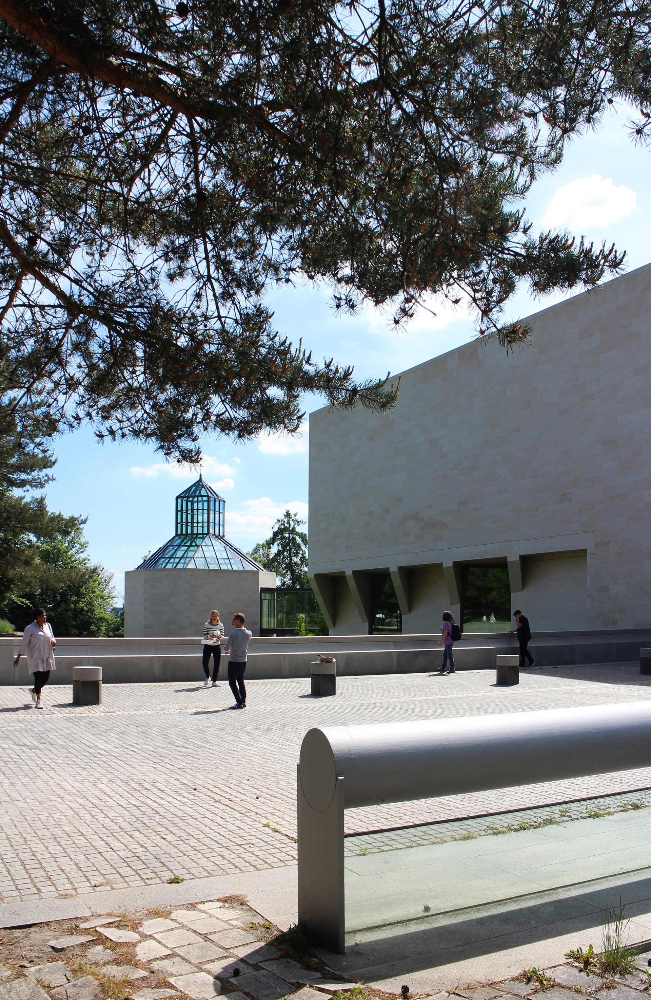
Gözlem: Solda sekizgen pavyon, sağda derin nişli galeri cephesi, önde meydan ve korkuluk görülüyor; giriş portali kadrajda yok.
Karar: Giriş saçağına dayanan önceki gerekçe hatalı; kamera noktası kaldırıldı.
Karşılaştırma: 002, 003, 088, 102 · Kat/alan: dis
Kamera pozu ve metrik ölçüler doğrulanmadı.
Kaynak002 · Doğu cephesi / pavyon
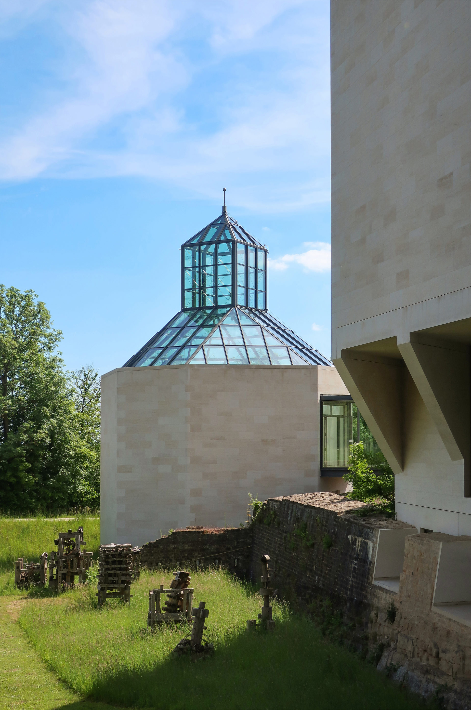
Gözlem: Pavyonun taş kaidesi, cam feneri ve sağdaki nişli cephe; altta tarihi duvar ve çim hendek.
Karar: Cephe/pavyon ilişkisi tutarlı; kamera uzaklığı yalnızca hipotez.
Karşılaştırma: 003, 088, 102 · Kat/alan: dis
Kamera pozu ve metrik ölçüler doğrulanmadı.
Kaynak003 · Doğu galeri cephesi
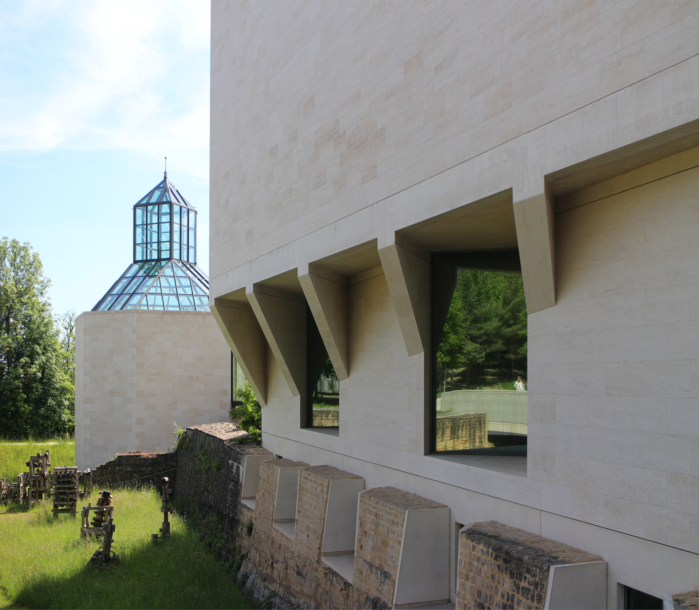
Gözlem: Derin eğimli pencere yanakları, alt kot küçük pencereleri ve pavyonun bağlantısı birlikte okunuyor.
Karar: Cephe ailesi tutarlı; açıklık ölçüleri perspektiften doğrudan alınamaz.
Karşılaştırma: 002, 004, 088, 102 · Kat/alan: dis
Kamera pozu ve metrik ölçüler doğrulanmadı.
Kaynak004 · Doğu galeri cephesi
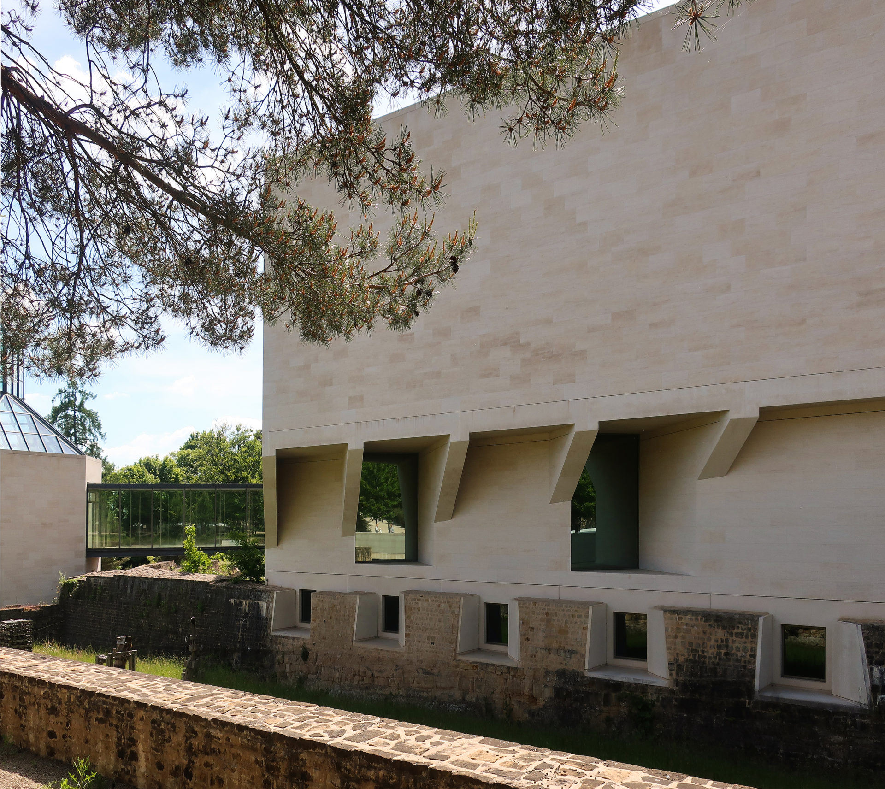
Gözlem: Dört pencere bölgesi, alt kattaki küçük açıklıklar ve ön tarihi duvar görülüyor.
Karar: Üst ve alt cephe açıklıkları ayrı elemanlar; kamera hipotezi korunuyor.
Karşılaştırma: 003, 088, 100 · Kat/alan: dis
Kamera pozu ve metrik ölçüler doğrulanmadı.
Kaynak005 · Doğu cephe köşesi
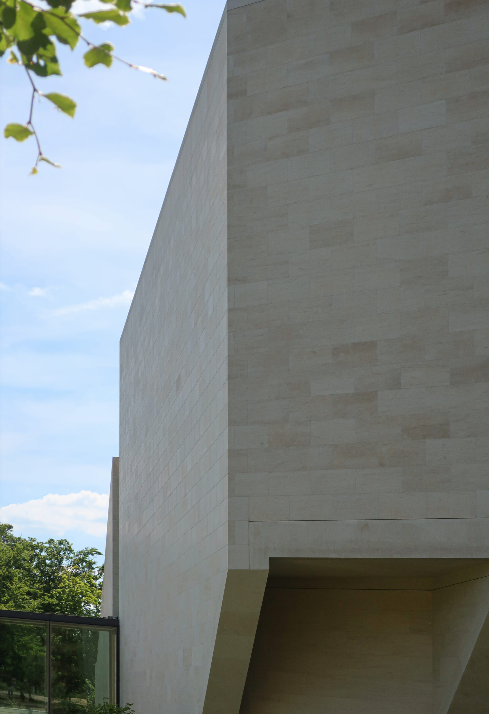
Gözlem: Taş köşe, niş üstündeki eğimli yüzey ve geride cam bağlantının bir parçası görülüyor.
Karar: Dar kadraj tek bir köşeyi kesinleştirmiyor; yön kaldırılıp aday bölgeye indirildi.
Karşılaştırma: 003, 004 · Kat/alan: dis
Kamera pozu ve metrik ölçüler doğrulanmadı.
Kaynak006 · Giriş saçağı
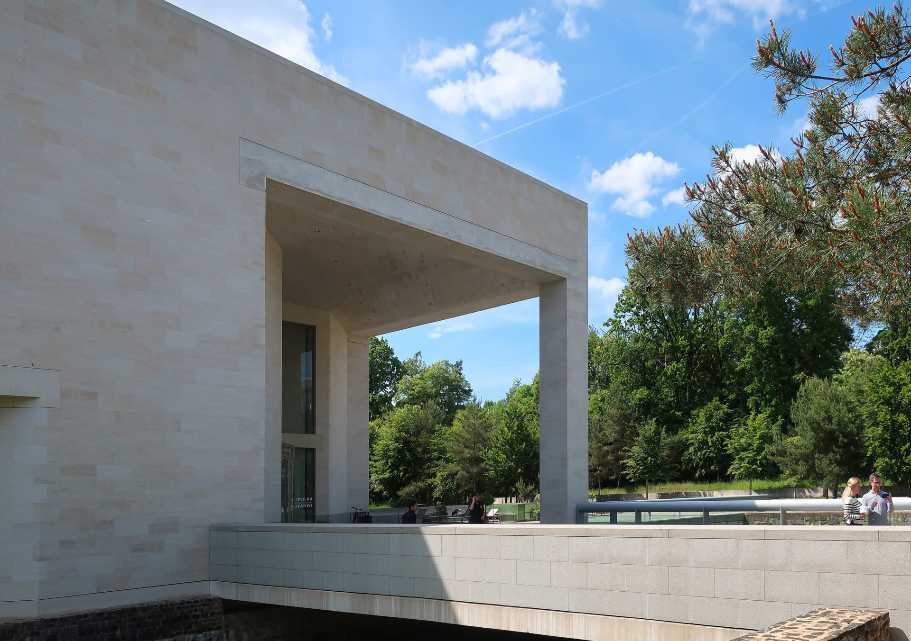
Gözlem: Giriş köprüsü, dikdörtgen taş portal ve tek büyük dış ayak yan açıdan görülüyor.
Karar: Giriş kimliği tutarlı; portal kalınlığı ve kamera mesafesi çözülmedi.
Karşılaştırma: 008, 009, 013, 102 · Kat/alan: dis
Kamera pozu ve metrik ölçüler doğrulanmadı.
Kaynak007 · Giriş köprüsü parapeti
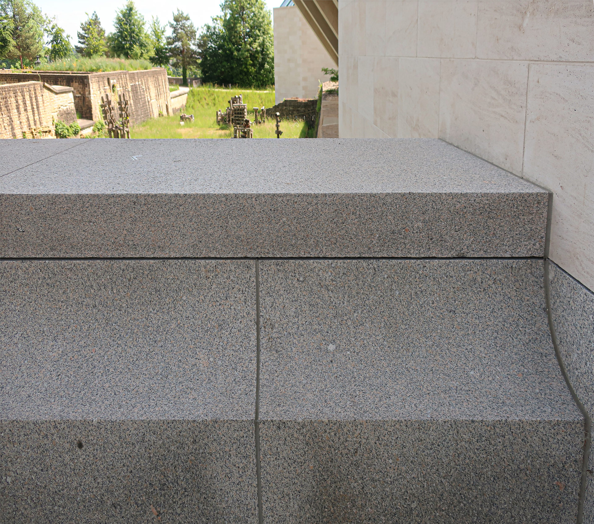
Gözlem: Gri, pahlanmış parapet üstü açık renk taş duvara dayanıyor; arkada hendek var.
Karar: Birleşim detayı kullanılabilir; tam çekim noktası bilinmiyor.
Karşılaştırma: 006, 008 · Kat/alan: dis
Kamera pozu ve metrik ölçüler doğrulanmadı.
Kaynak008 · Giriş köprüsü
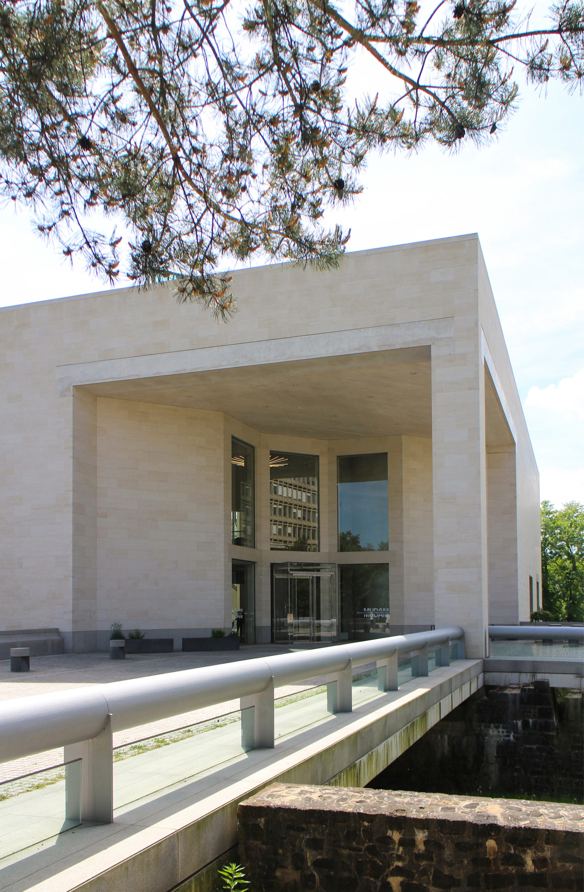
Gözlem: Köprü korkuluğu kapıya doğru uzanıyor; portalın iki açıklığı ve döner kapı seçiliyor.
Karar: Girişe doğru bakış tutarlı; sayısal poz doğrulanmış değil.
Karşılaştırma: 009, 013, 102 · Kat/alan: dis
Kamera pozu ve metrik ölçüler doğrulanmadı.
Kaynak009 · Giriş aksı
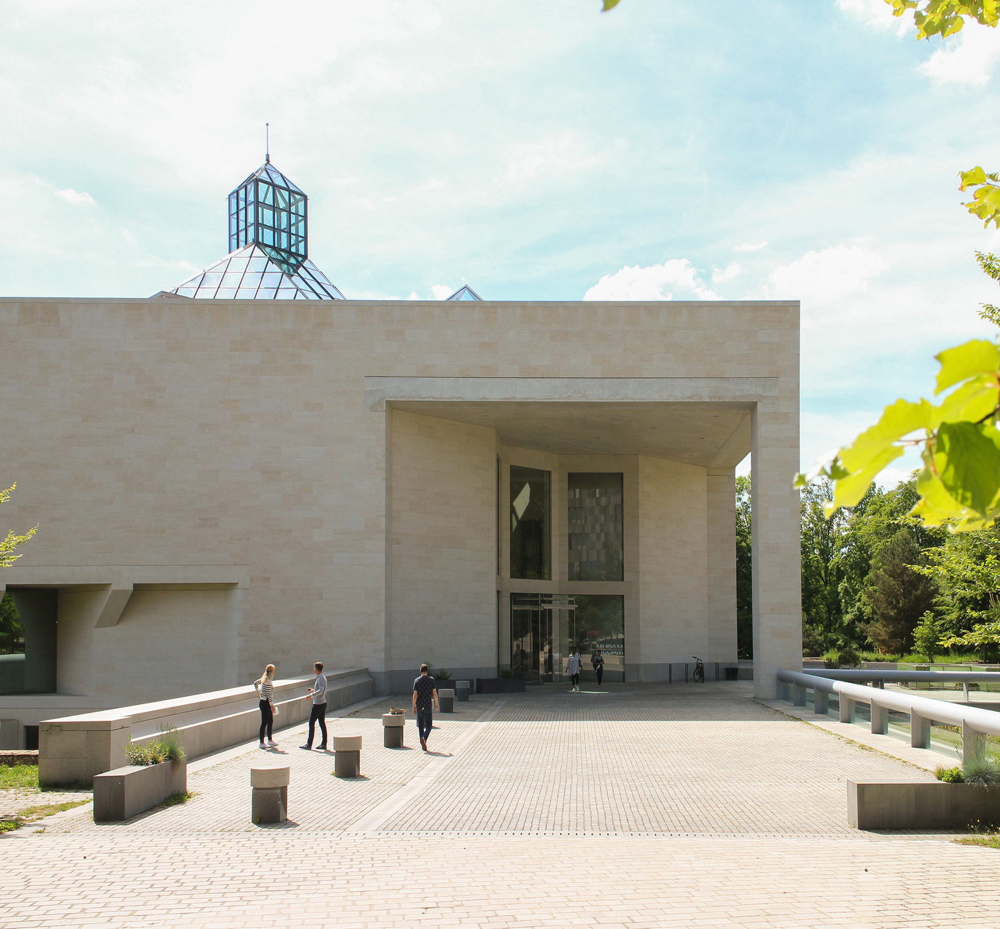
Gözlem: Giriş portali, köprü ve döner kapı yaklaşık karşıdan görülüyor.
Karar: Giriş aksı hipotezi makul; lens ve kamera uzaklığı bilinmiyor.
Karşılaştırma: 008, 013, 102 · Kat/alan: dis
Kamera pozu ve metrik ölçüler doğrulanmadı.
Kaynak010 · Giriş meydanı yan yaklaşım
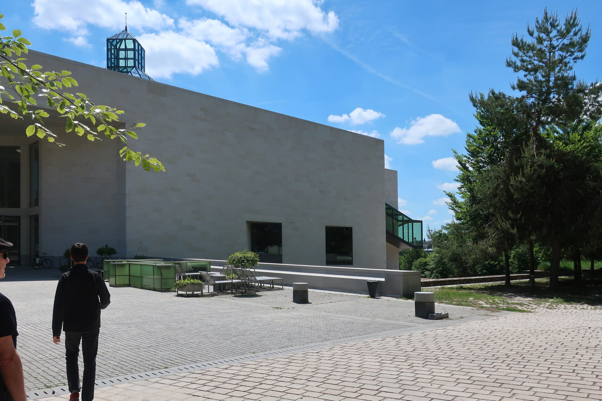
Gözlem: Giriş solda kadraj dışında devam ediyor; sağ taş cephede iki sade dikdörtgen açıklık var.
Karar: Bu cepheyi 003'teki derin nişli cepheyle tek aile olarak birleştirmeyin.
Karşılaştırma: 001, 009, 116 · Kat/alan: dis
Kamera pozu ve metrik ölçüler doğrulanmadı.
Kaynak011 · Saçak altından meydana bakış
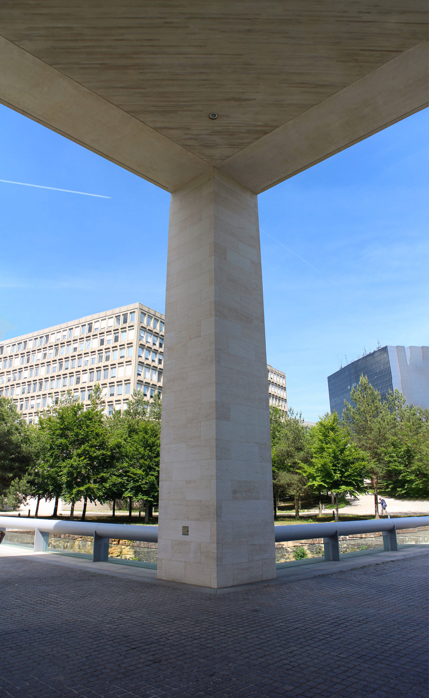
Gözlem: Portal ayağının arkasında yüksek ofis yapıları ve köprü korkuluğu var.
Karar: 012 ile aynı azimut varsayımı desteklenmiyor; sayısal yön kaldırıldı.
Karşılaştırma: 008, 012, 013 · Kat/alan: dis
Kamera pozu ve metrik ölçüler doğrulanmadı.
Kaynak012 · Saçak altı
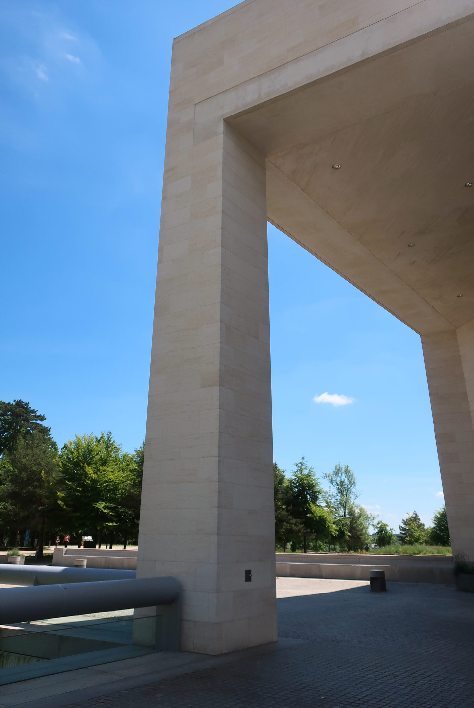
Gözlem: Portalın dış kenarı, diğer yüzü ve ağaçlık meydan görülüyor; 011'deki arka plan yok.
Karar: 011 ile farklı bakış; yalnız portal çevresi aday bölgesi korundu.
Karşılaştırma: 006, 011 · Kat/alan: dis
Kamera pozu ve metrik ölçüler doğrulanmadı.
Kaynak013 · Giriş kapısı önü
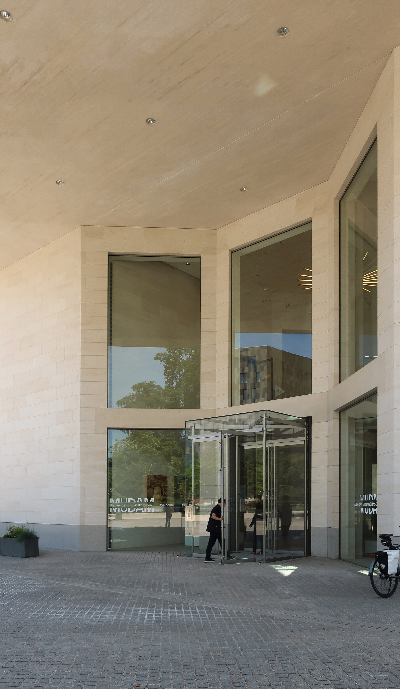
Gözlem: Döner kapı, yan sabit camlar ve üst pencereden radyal iç armatür görülüyor.
Karar: Giriş ve iç tavan detayı arasındaki görsel eşleşme güçlü.
Karşılaştırma: 014, 015, 016 · Kat/alan: dis
Kamera pozu ve metrik ölçüler doğrulanmadı.
Kaynak014 · Giriş vestibülü
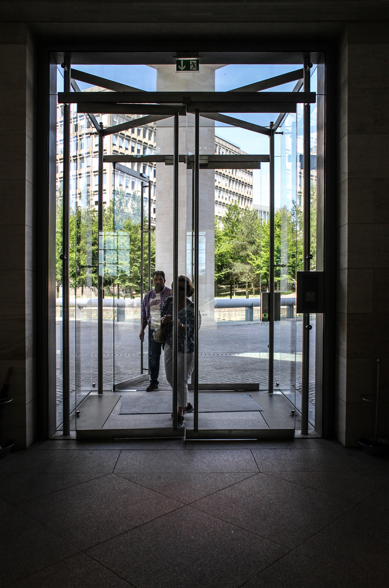
Gözlem: Döner kapı içeriden görülüyor; dışarıda köprü ve yüksek bina var.
Karar: İçeriden giriş meydanına bakış tutarlı.
Karşılaştırma: 008, 013 · Kat/alan: 0
Kamera pozu ve metrik ölçüler doğrulanmadı.
Kaynak015 · Giriş vestibülü tavanı
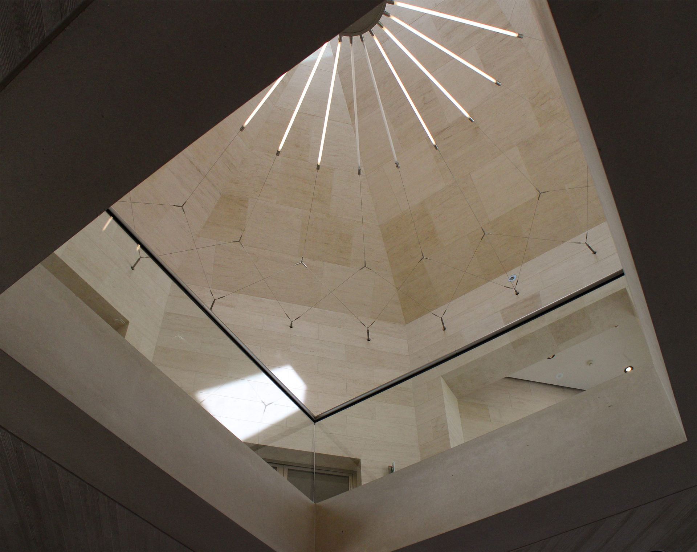
Gözlem: Radyal armatür, çokgen taş tavan ve üst seviyede cam korkuluk görülüyor.
Karar: Vestibül tavanı eşleşiyor; görünen üst kat korkuluğu kameranın üst katta olduğunu göstermez.
Karşılaştırma: 013, 016, 103 · Kat/alan: 0
Kamera pozu ve metrik ölçüler doğrulanmadı.
Kaynak016 · Giriş vestibülü tavanı
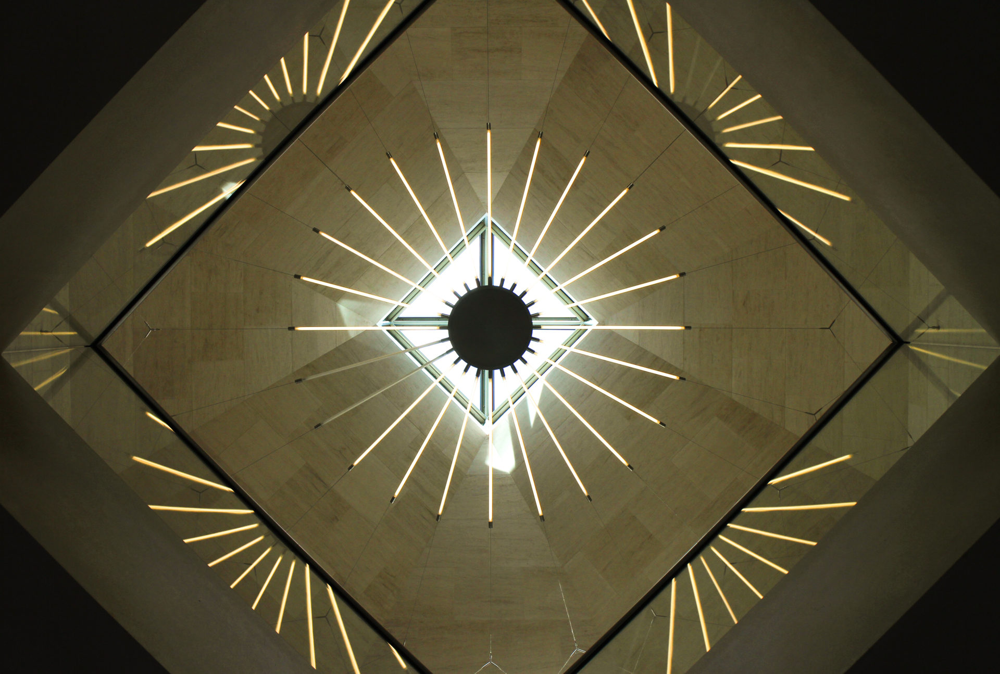
Gözlem: Armatürün tam alttan radyal düzeni ve çokgen tavan boşluğu görülüyor.
Karar: Yukarı bakış; plan azimutu verilmemeli, boyut çıkarılmamalı.
Karşılaştırma: 013, 015, 103 · Kat/alan: 0
Kamera pozu ve metrik ölçüler doğrulanmadı.
Kaynak017 · Grand Hall / asansör ve galeri geçişi adayı
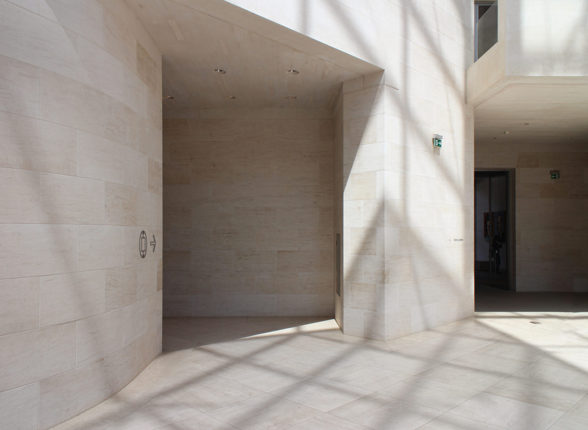
Gözlem: Kavisli taş duvarda asansör yönlendirmesi, derin niş ve sağda galeri geçişi var.
Karar: Genel galeri eşiği yerine Grand Hall/asansör çevresi adayı; önceki nokta ve yön değiştirildi.
Karşılaştırma: 077, 102 · Kat/alan: 0
Kamera pozu ve metrik ölçüler doğrulanmadı.
Kaynak018 · İsim plakası / iç duvar
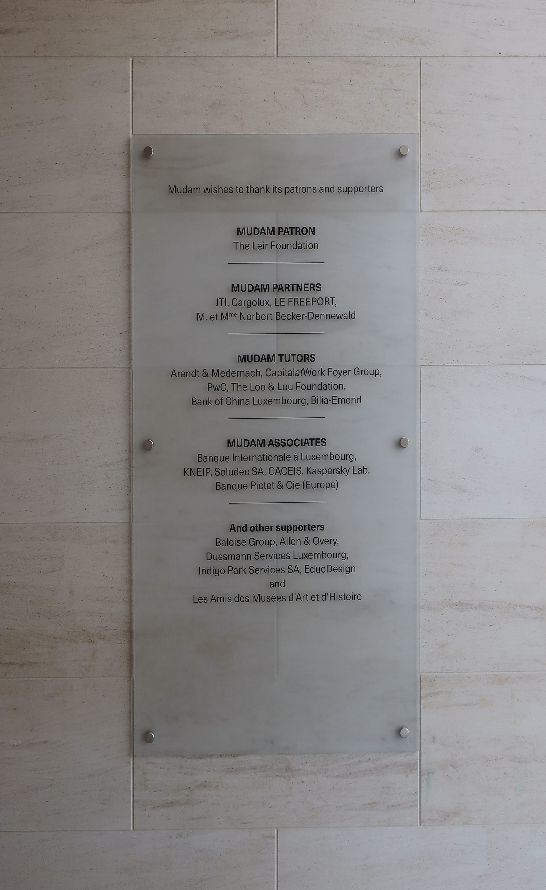
Gözlem: Destekçi isimleri taşıyan saydam plaka dört bağlantıyla taş duvara takılmış.
Karar: Plaka detayı biliniyor; duvarın ve katın kimliği belirlenemiyor.
Karşılaştırma: 102 · Kat/alan: belirsiz
Kamera pozu ve metrik ölçüler doğrulanmadı.
Kaynak019 · Kavisli taş duvar / üst birleşim
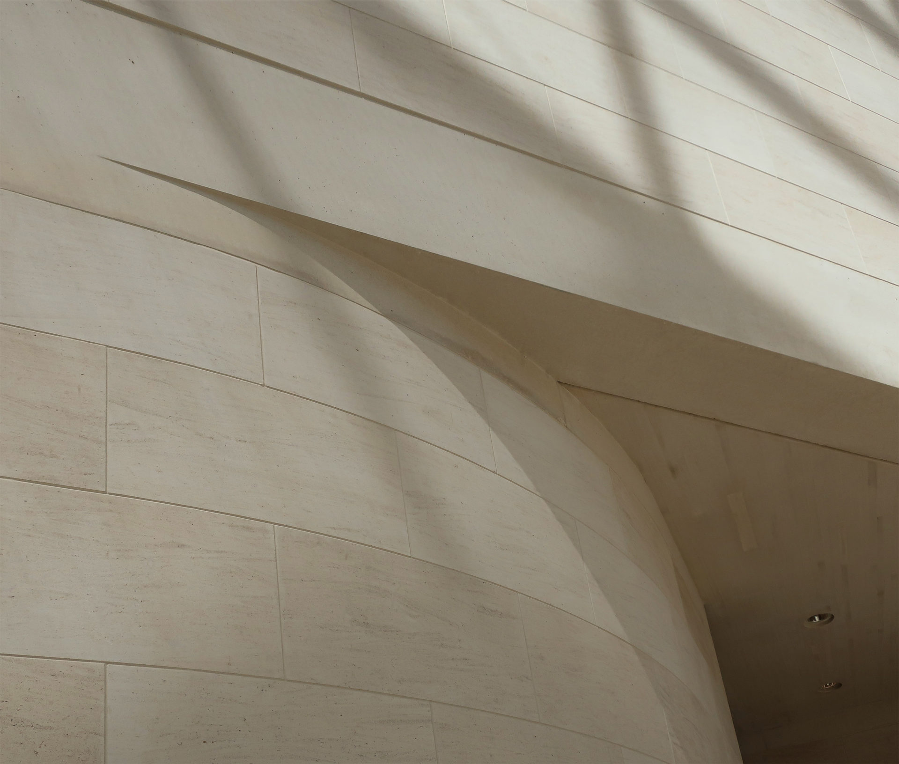
Gözlem: Kavisli taş yüzey, keskin birleşen taş kiriş/saçak altı ve gölge görülüyor; basamak yok.
Karar: Yukarı çıkan merdiven kimliği yeterince kanıtlı değil; merdiven ataması ve konum kaldırıldı.
Karşılaştırma: 017, 021 · Kat/alan: belirsiz
Kamera pozu ve metrik ölçüler doğrulanmadı.
Kaynak020 · Duvara işlenmiş plan ve yönlendirme
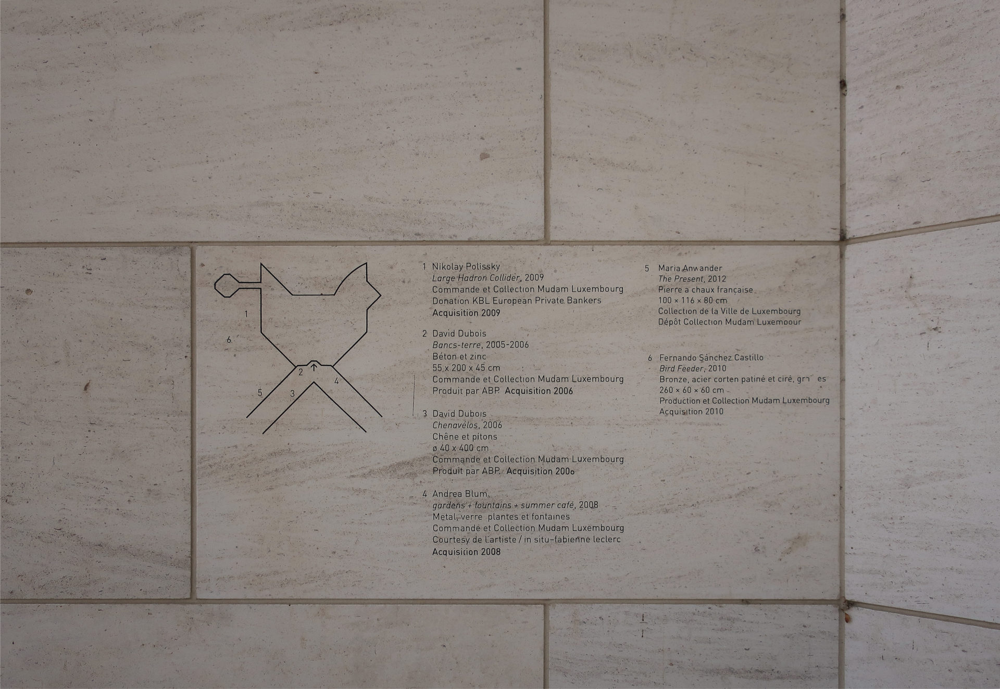
Gözlem: Taş duvarda işlenmiş plan ve sergi yönlendirme yazıları var; çevre kadraj dışında.
Karar: Pano içeriği konumunu kanıtlamıyor; önceki hol noktası kaldırıldı.
Karşılaştırma: 102 · Kat/alan: belirsiz
Kamera pozu ve metrik ölçüler doğrulanmadı.
Kaynak021 · Grand Hall / ana merdiven
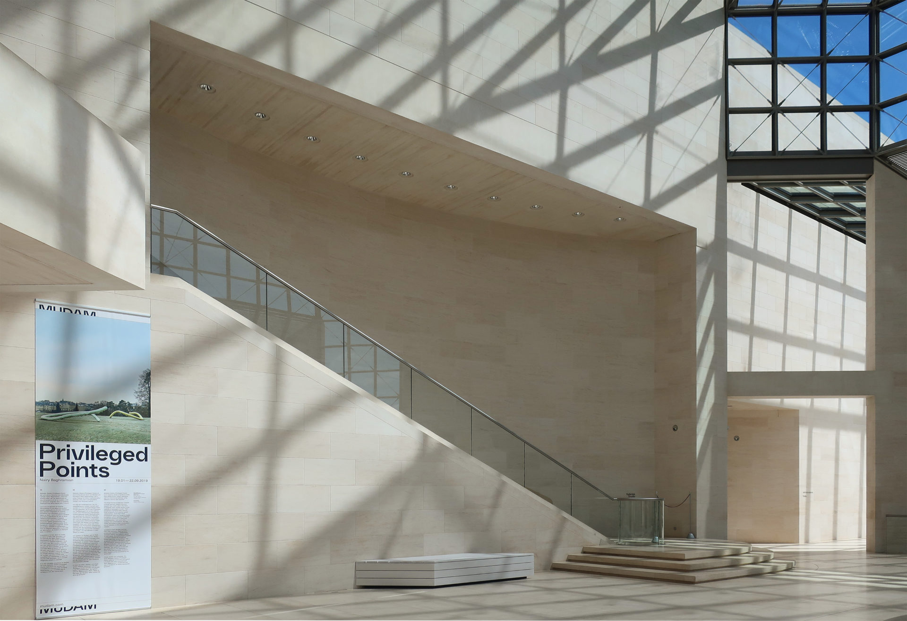
Gözlem: Geniş merdiven sağ alttan sol üst galeriye yükseliyor; alt başlangıç ve cam korkuluk net.
Karar: 0→+1 geniş merdiven ailesi doğrulanıyor; metrik kamera ve basamak ölçüsü henüz yok.
Karşılaştırma: 022, 025, 026, 102, 103 · Kat/alan: 0
Kamera pozu ve metrik ölçüler doğrulanmadı.
Kaynak022 · Ana merdiven alt sahanlığı

Gözlem: Geniş alt sahanlık basamakları ve kıvrılarak başlayan cam korkuluk görülüyor.
Karar: Yukarı çıkan merdivenin alt başlangıcı; aşağı iniş merdiveniyle karıştırılmamalı.
Karşılaştırma: 021, 023 · Kat/alan: 0
Kamera pozu ve metrik ölçüler doğrulanmadı.
Kaynak023 · 0→+1 merdiveninin alt başlangıç korkuluğu
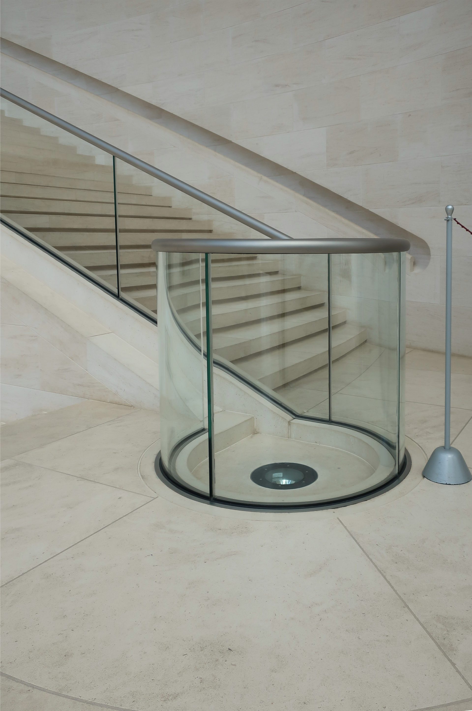
Gözlem: Cam korkuluğun yuvarlak bitişi içinde zemine gömülü ışık; arkada yukarı çıkan basamaklar var.
Karar: Alt başlangıç detayı; eski 'üstten boşluğa bakış' açıklaması kaldırıldı.
Karşılaştırma: 021, 022, 024 · Kat/alan: 0
Kamera pozu ve metrik ölçüler doğrulanmadı.
Kaynak024 · Ana merdiven küpeştesi
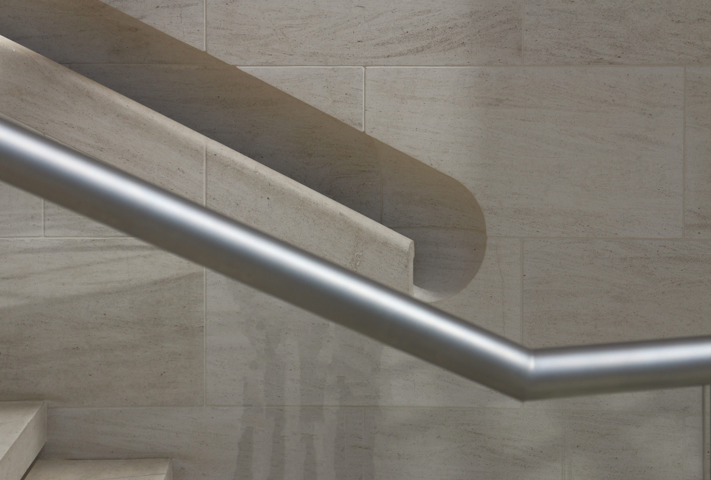
Gözlem: Küpeşte dirseği, duvar üzerindeki taş tutamak ve kavisli camın kenarı yakın planda.
Karar: Aynı merdiven ailesi olası; tam basamak/kamera noktası bilinmiyor.
Karşılaştırma: 022, 023 · Kat/alan: 0
Kamera pozu ve metrik ölçüler doğrulanmadı.
Kaynak025 · Grand Hall
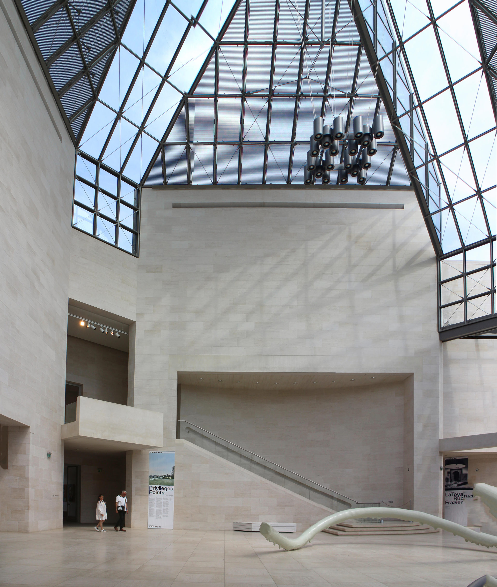
Gözlem: Geniş merdiven, üst galeri açıklığı, ana cam çatı ve geçici yeşil eser aynı kadrajda.
Karar: Düşey mekân ilişkisi kullanılabilir; panorama varsa tek perspektif kalibrasyonu uygulanamaz.
Karşılaştırma: 021, 026, 103 · Kat/alan: 0
Kamera pozu ve metrik ölçüler doğrulanmadı.
Kaynak026 · Grand Hall
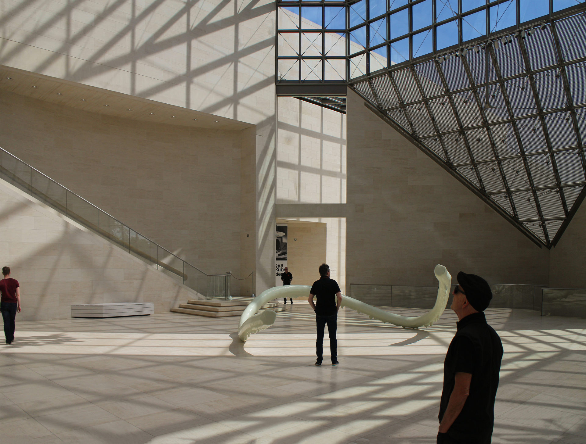
Gözlem: Geniş merdiven solda; aşağı inişin bulunduğu üçgen cam yüzey sağda; eser ortada.
Karar: İki farklı merdiven çevresini ayıran ortak hol referansı.
Karşılaştırma: 021, 045, 049, 102 · Kat/alan: 0
Kamera pozu ve metrik ölçüler doğrulanmadı.
Kaynak027 · Grand Hall cam yüzeyi
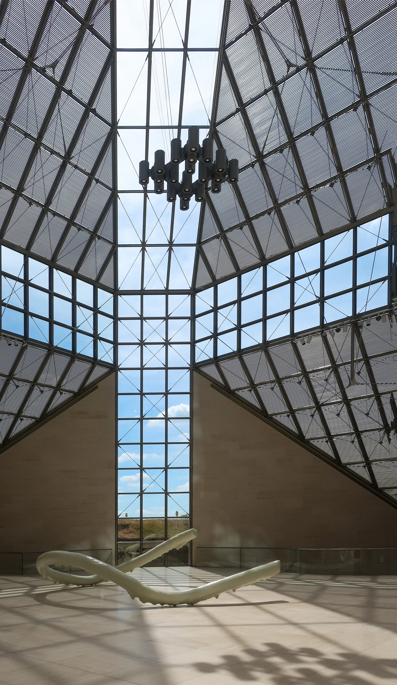
Gözlem: İki üçgen güneş kırıcı yüzeyin arasında yüksek düşey cam şerit ve ana armatür var.
Karar: Merkez cam örtü ilişkisi tutarlı; görünen çatı kotu kamera kotu değildir.
Karşılaştırma: 028, 029, 087, 119 · Kat/alan: 0
Kamera pozu ve metrik ölçüler doğrulanmadı.
Kaynak028 · Grand Hall çatı izdüşümü
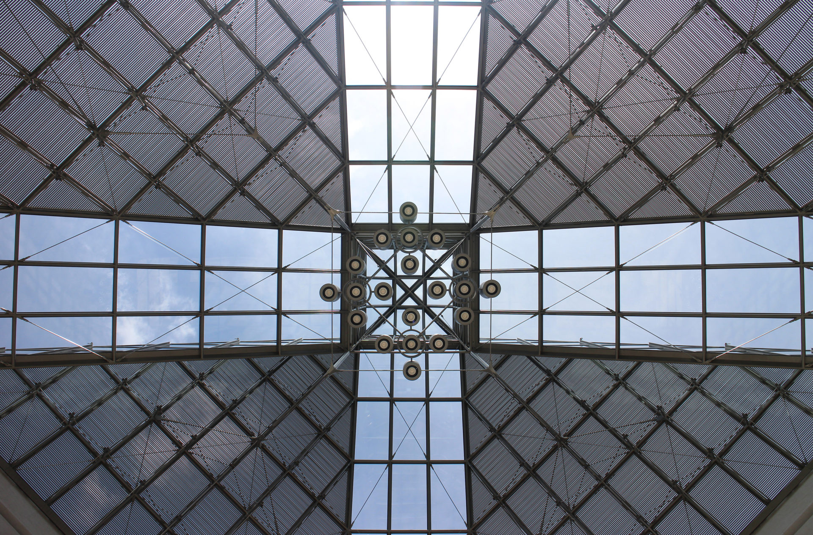
Gözlem: Ana armatüre tam yukarı bakışta dört cam yüzey ve yatay lameller okunuyor.
Karar: Çatı modül düzeni referansı; azimut ve kamera kotu çözülmedi.
Karşılaştırma: 027, 029 · Kat/alan: 0
Kamera pozu ve metrik ölçüler doğrulanmadı.
Kaynak029 · Grand Hall çatı izdüşümü
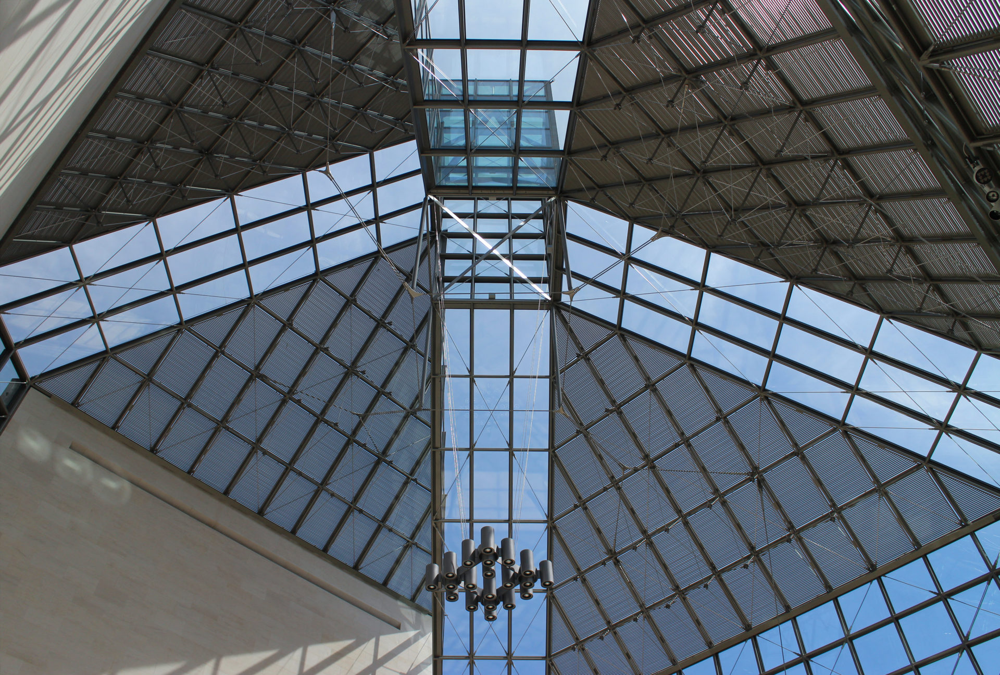
Gözlem: Çatı feneri, eğik yüzeyler ve kablo sistemi alttan görülüyor.
Karar: Çatı bileşenleri referansı; tek fotoğraftan tepe yüksekliği alınamaz.
Karşılaştırma: 027, 028 · Kat/alan: 0
Kamera pozu ve metrik ölçüler doğrulanmadı.
Kaynak030 · Grand Hall / üçgen cam köşe detayı
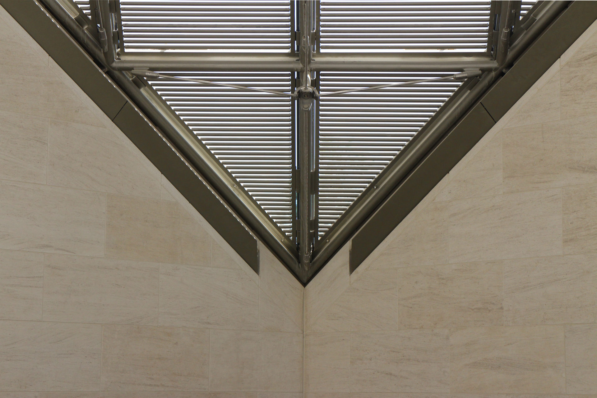
Gözlem: Üçgen cam yüzeyin alt köşesi, yatay lameller ve taş birleşimi yakın planda.
Karar: Benzer üçgen yüzeyler var; hangi köşe olduğu kesin değil, merkez hol aday alanına alındı.
Karşılaştırma: 027, 049, 114 · Kat/alan: 0
Kamera pozu ve metrik ölçüler doğrulanmadı.
Kaynak031 · Grand Hall
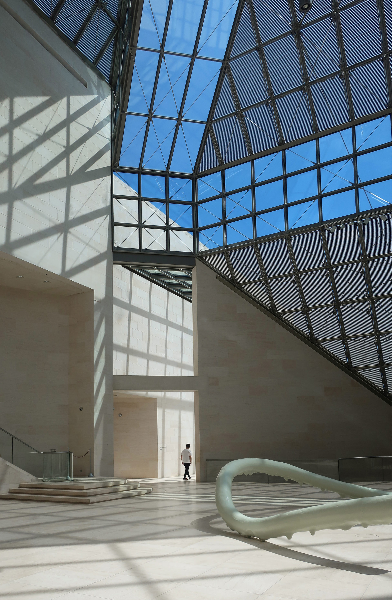
Gözlem: Geniş merdivenin alt basamakları solda; üçgen cam ve uzun düşey açıklık sağda.
Karar: Hol eşleşiyor fakat önceki kamera-yön çifti güvenilir değil; yön kaldırıldı.
Karşılaştırma: 021, 026, 110 · Kat/alan: 0
Kamera pozu ve metrik ölçüler doğrulanmadı.
Kaynak032 · Grand Hall → Jardin des Sculptures geçişi
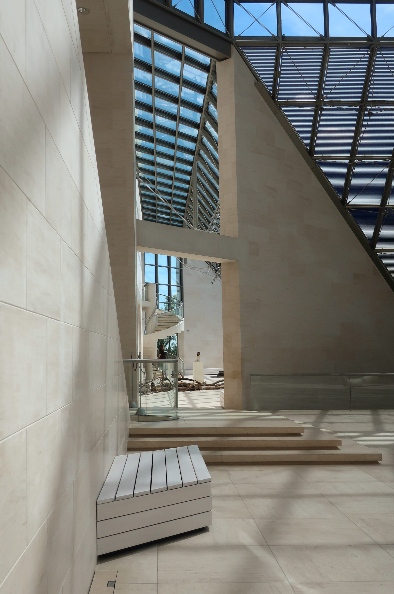
Gözlem: Kısa eşik basamaklarının arkasında Jardin des Sculptures ve spiral merdiven görülüyor.
Karar: Önceki doğuya/iniş merdivenine yön ataması hatalı; geçiş bölgesine taşındı, azimut kaldırıldı.
Karşılaştırma: 034, 041, 102 · Kat/alan: 0
Kamera pozu ve metrik ölçüler doğrulanmadı.
Kaynak033 · Jardin des Sculptures / Grand Hall yönü
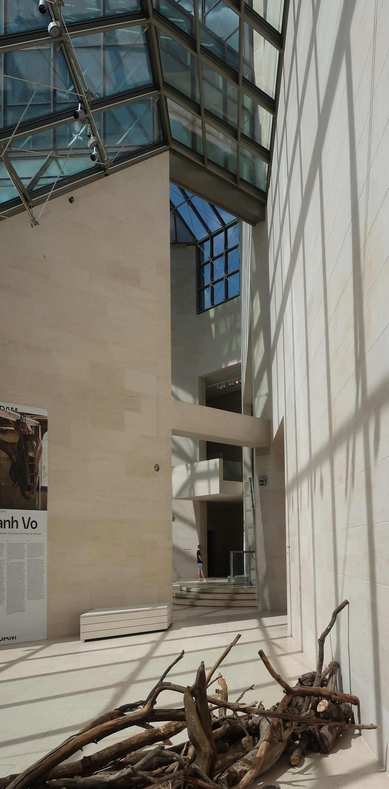
Gözlem: Dal biçimli eser ön planda, taş açıklıklar ve Grand Hall tarafındaki geçiş geride.
Karar: 034 ile aynı hacimde ters bakış olası; eski kesin yön yerine heykel bahçesi aday bölgesi.
Karşılaştırma: 032, 034, 041 · Kat/alan: 0
Kamera pozu ve metrik ölçüler doğrulanmadı.
Kaynak034 · Heykel bahçesi / doğu cam salon
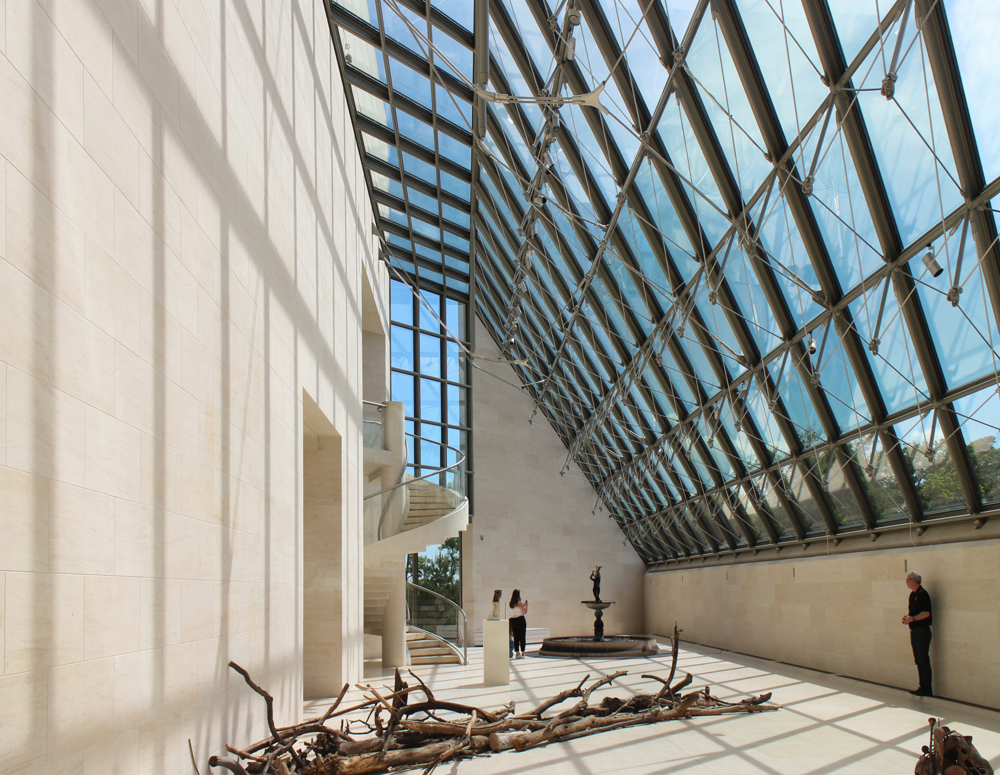
Gözlem: Uzun eğik cam çatı, taş duvar, dal eseri ve uzakta spiral merdiven görülüyor.
Karar: Jardin des Sculptures kimliği güçlü; spiral merdivene doğru bakış hipotezi makul.
Karşılaştırma: 033, 035, 041, 102 · Kat/alan: 0
Kamera pozu ve metrik ölçüler doğrulanmadı.
Kaynak035 · Doğu cam salon çatı sistemi
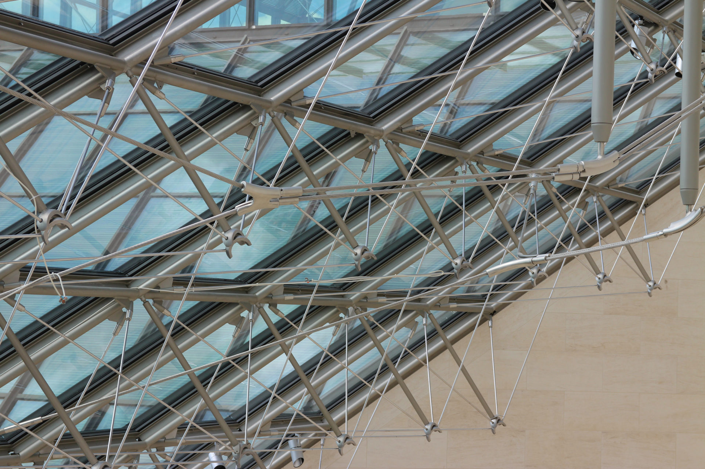
Gözlem: Eğik cam çatı altında çapraz çubuklar, gergiler ve kısa basınç elemanları görülüyor.
Karar: Heykel bahçesi çatı taşıyıcı ailesi; eleman kesitleri ölçülmedi.
Karşılaştırma: 034, 036, 037 · Kat/alan: 0
Kamera pozu ve metrik ölçüler doğrulanmadı.
Kaynak036 · Doğu cam salon çatı sistemi
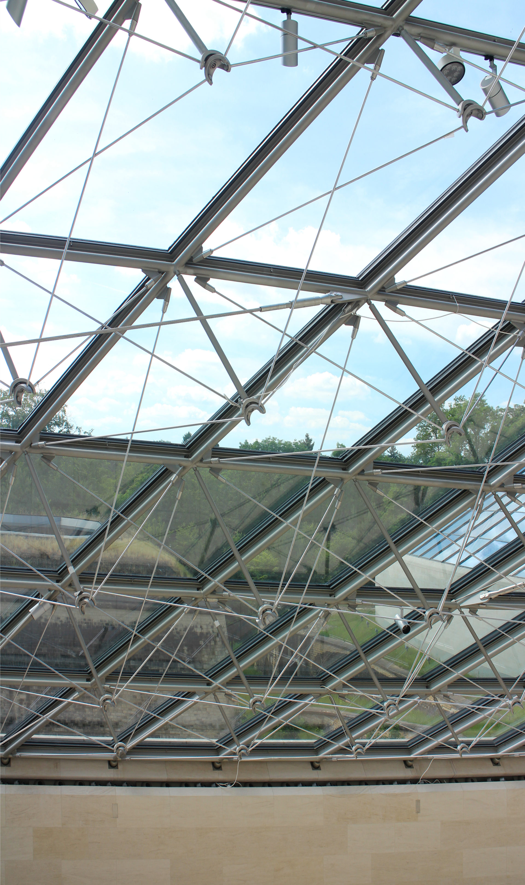
Gözlem: Cam modüller, alttaki taş duvar ve dıştaki ağaçlar birlikte görülüyor.
Karar: Aynı eğik cam yüzey; detay referansı olarak kullanılabilir.
Karşılaştırma: 034, 035 · Kat/alan: 0
Kamera pozu ve metrik ölçüler doğrulanmadı.
Kaynak037 · Doğu cam salon çatı sistemi
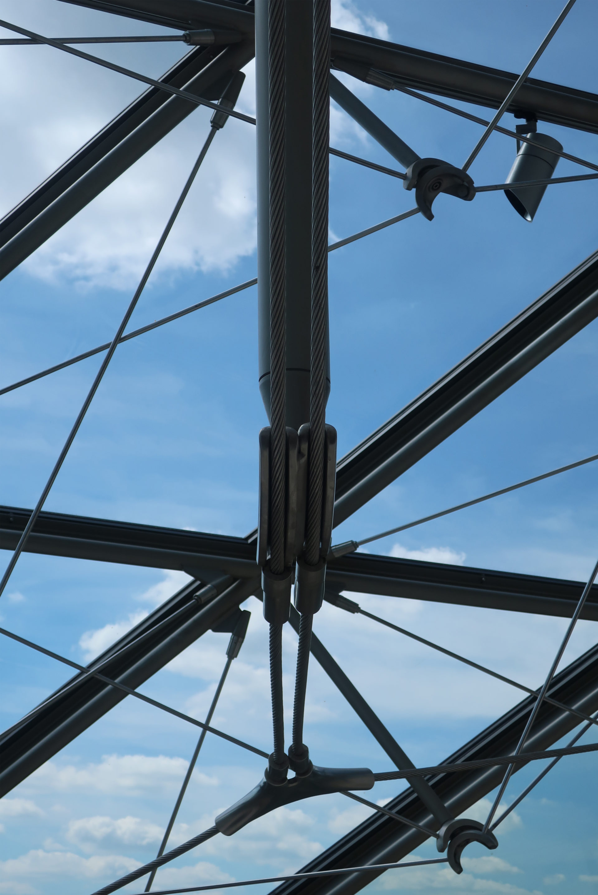
Gözlem: Kalın burulmuş/halat görünümlü eleman, uç bağlantı ve ince gergiler yakın planda.
Karar: Bağlantı topolojisi okunuyor; çap ve malzeme alaşımı fotoğraftan kesinleşmez.
Karşılaştırma: 035, 038, 040 · Kat/alan: 0
Kamera pozu ve metrik ölçüler doğrulanmadı.
Kaynak038 · Doğu cam salon çatı sistemi
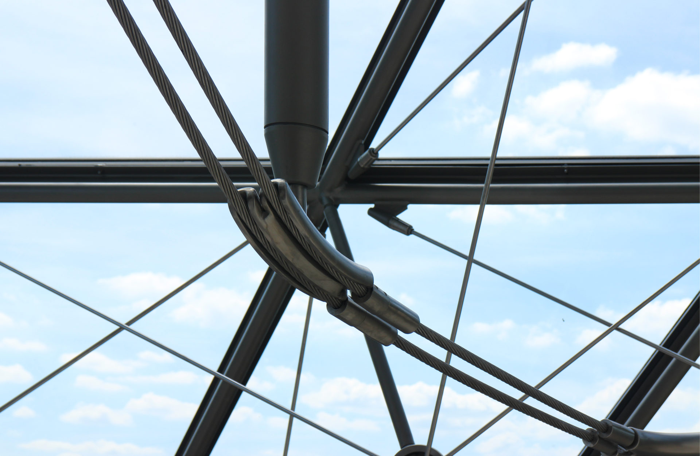
Gözlem: Çatal uçlu bağlantı, uzun metal eleman ve ince gergilerin birleşimi görülüyor.
Karar: Bağlantı ailesi eşleşiyor; tam panel konumu bilinmiyor.
Karşılaştırma: 037, 039, 040 · Kat/alan: 0
Kamera pozu ve metrik ölçüler doğrulanmadı.
Kaynak039 · Doğu cam salon çatı sistemi
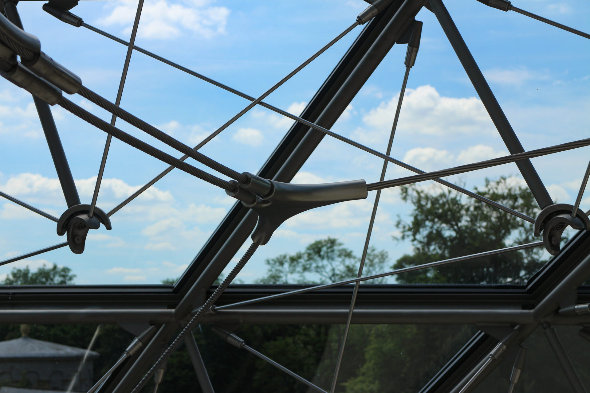
Gözlem: Çapraz gergiler ve çatallı birleşim, cam ızgarasına bağlanıyor.
Karar: Tekrarlanan düğüm; plan üzerindeki bir modüle kesin atanamaz.
Karşılaştırma: 037, 038 · Kat/alan: 0
Kamera pozu ve metrik ölçüler doğrulanmadı.
Kaynak040 · Doğu cam salon çatı sistemi
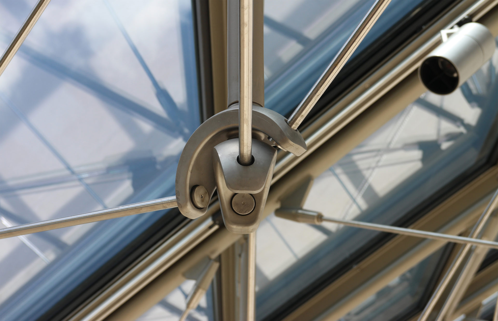
Gözlem: Yuvarlak mafsal benzeri birleşim, pim/vida ve komşu silindirik eleman görülüyor.
Karar: Yakın detay kullanılabilir; statik işlev ve ölçüler ayrıca çözülmeli.
Karşılaştırma: 037, 038 · Kat/alan: 0
Kamera pozu ve metrik ölçüler doğrulanmadı.
Kaynak041 · Doğu cam salon spiral merdiveni
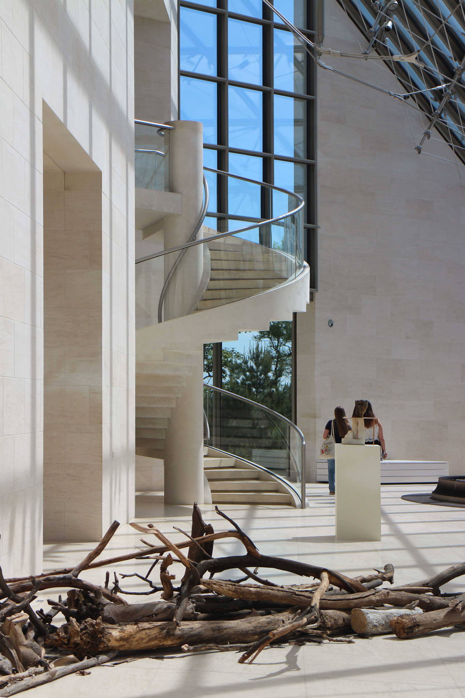
Gözlem: Silindirik merkezli dar spiral merdiven zeminden üst galeriye yükseliyor.
Karar: Grand Hall'deki iki merdivenden ayrı doğu spiral sistemi.
Karşılaştırma: 034, 042, 043, 102, 103 · Kat/alan: 0
Kamera pozu ve metrik ölçüler doğrulanmadı.
Kaynak042 · Spiral merdiven altı
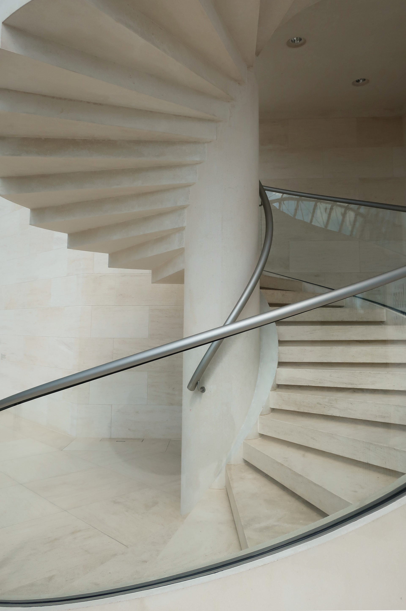
Gözlem: Merkez silindir, yükselen kama basamaklar ve üst kolun basamaklı alt yüzeyi görülüyor.
Karar: Spiral merdiven üzerinde/başlangıcında; kesin kamera kotu yok, ara seviye olarak ayrıldı.
Karşılaştırma: 041, 043 · Kat/alan: ara
Kamera pozu ve metrik ölçüler doğrulanmadı.
Kaynak043 · Doğu spiral merdiveni / üst sahanlık
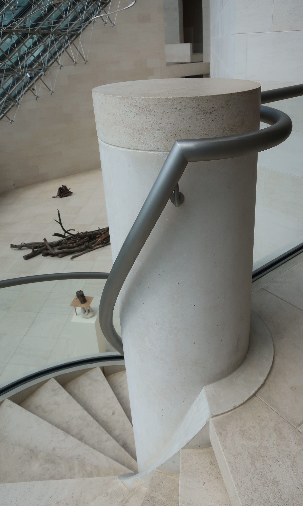
Gözlem: Üst sahanlık taşı ön planda, biten merkez silindir ve aşağıdaki eserler görülüyor.
Karar: Zemin kat ataması yanlış; +1 üst sahanlık adayı güçlü, tam kamera kotu ölçülmedi.
Karşılaştırma: 033, 041, 103 · Kat/alan: 1
Kamera pozu ve metrik ölçüler doğrulanmadı.
Kaynak044 · Doğu spiral merdiven küpeştesi
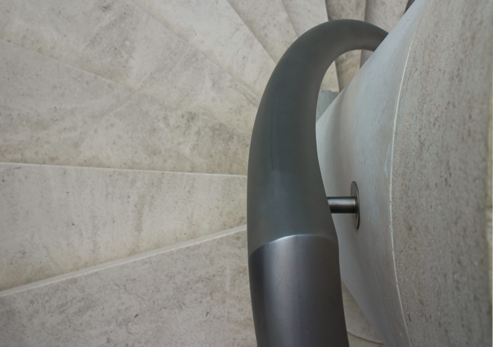
Gözlem: Silindire bağlanan küpeşte ve aşağıdaki kama basamaklar yakın planda.
Karar: Spiral merdiven detayı; 0 kat varsayımı kaldırıldı, hangi basamak bilinmiyor.
Karşılaştırma: 042, 043 · Kat/alan: ara
Kamera pozu ve metrik ölçüler doğrulanmadı.
Kaynak045 · Grand Hall / aşağı inen yarım daire merdiven
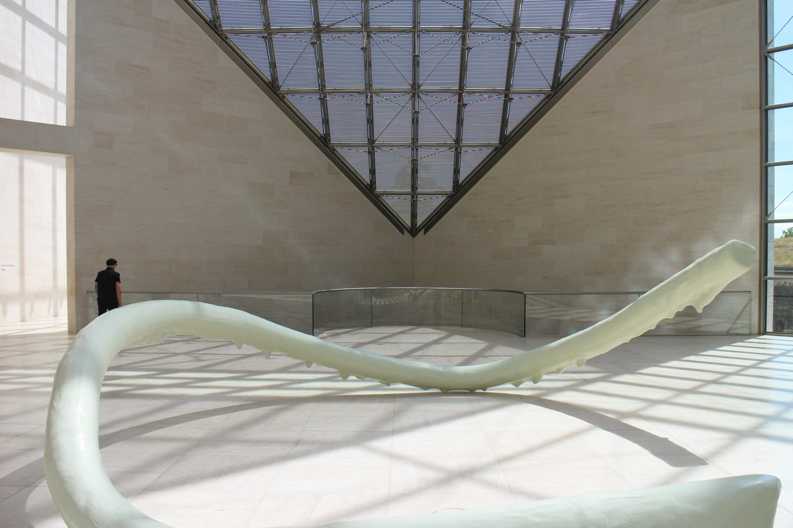
Gözlem: Yeşil eser arkasında üçgen lamelli camın altında iniş boşluğu korkuluğu görülüyor.
Karar: 0→−1 iniş çevresi; öndeki eser kalıcı mimari eleman değil.
Karşılaştırma: 026, 049, 114 · Kat/alan: 0
Kamera pozu ve metrik ölçüler doğrulanmadı.
Kaynak046 · Aşağı inen merdiven / düz korkuluk birleşimi
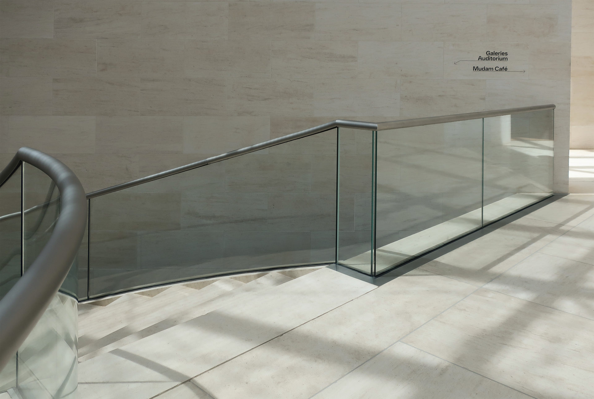
Gözlem: Cam korkuluk boyunca aşağı giden basamaklar; duvarda Galeries/Auditorium ve Mudam Café yazıları var.
Karar: Aşağı inişin üst kenarı; yönlendirme yazısı mekân eşleşmesini destekliyor.
Karşılaştırma: 047, 048, 049 · Kat/alan: 0
Kamera pozu ve metrik ölçüler doğrulanmadı.
Kaynak047 · Aşağı inen merdiven / düz korkuluk birleşimi
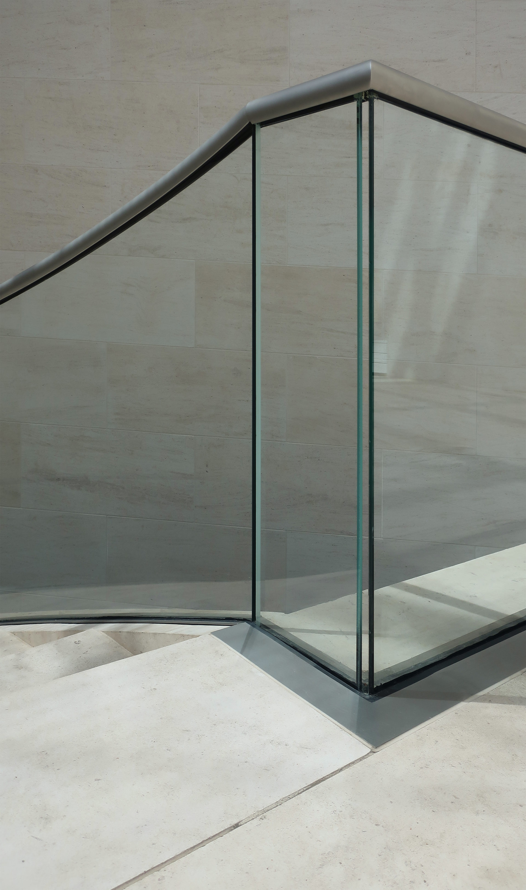
Gözlem: 046'daki cam korkuluğun düz-kavisli birleşimi ve alttaki basamak görünür.
Karar: İniş merdiveni korkuluk detayı; nokta/yön tekilleşmiyor.
Karşılaştırma: 046, 048 · Kat/alan: 0
Kamera pozu ve metrik ölçüler doğrulanmadı.
Kaynak048 · Aşağı inen merdiven / eğrisel korkuluk birleşimi
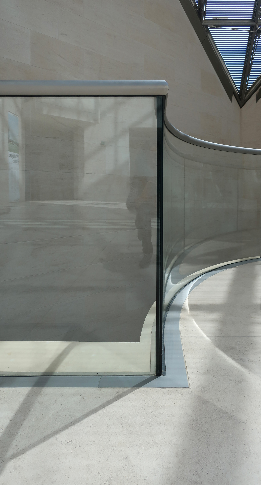
Gözlem: Düz camın kavisli cama bağlandığı uç ve geride üçgen güneş kırıcı var.
Karar: İniş boşluğunun üst çevresi; geniş çıkış merdiveni detayı değil.
Karşılaştırma: 046, 049, 114 · Kat/alan: 0
Kamera pozu ve metrik ölçüler doğrulanmadı.
Kaynak049 · Aşağı inen merdiven / üst sahanlık
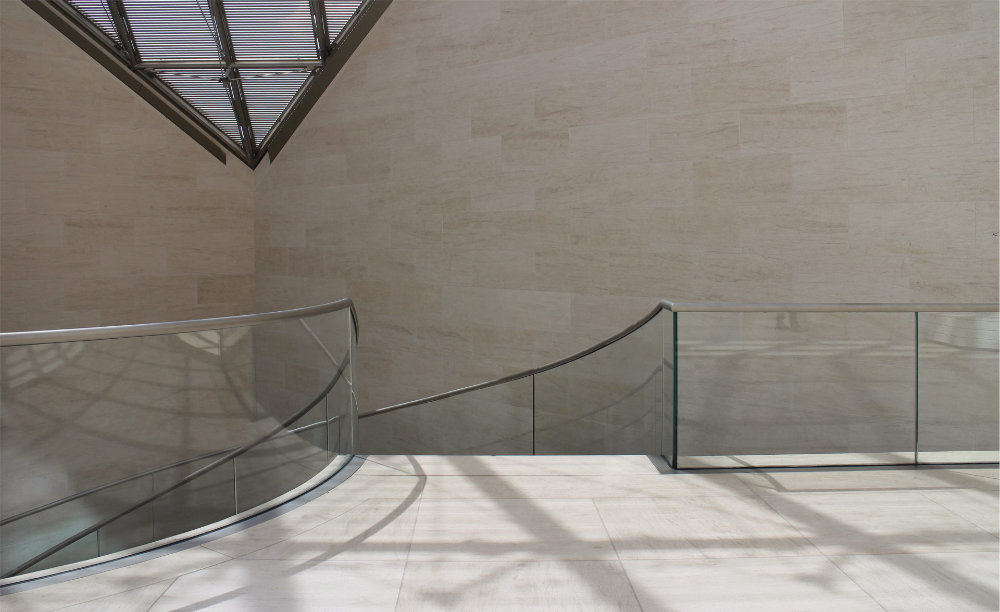
Gözlem: Zemin kat kenarından korkuluklar aşağı kıvrılıyor; üstte üçgen lamelli cam var.
Karar: Kullanıcı düzeltmesi doğrulandı: 0→−1 yarım daire merdiven.
Karşılaştırma: 045, 046, 050, 114 · Kat/alan: 0
Kamera pozu ve metrik ölçüler doğrulanmadı.
Kaynak050 · Aşağı inen merdiven / alt döşemeye bakış
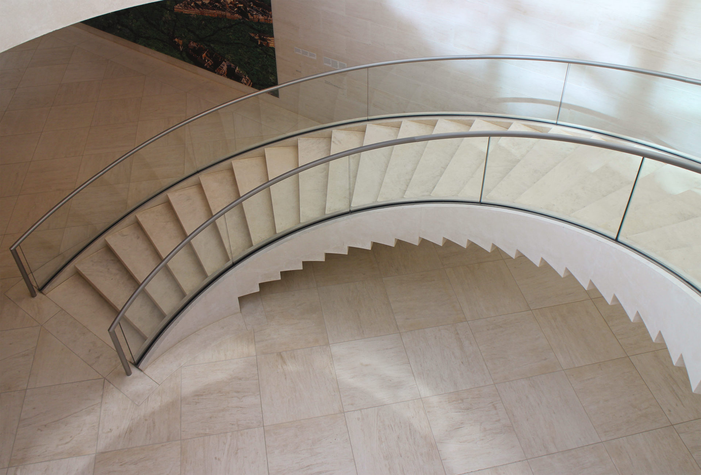
Gözlem: Aşağıdaki taş döşeme, kavisli basamaklar, iki cam korkuluk ve duvar eseri görülüyor.
Karar: Aşağı inişe bakış; kamera üst kenarda veya basamakta olabilir, kat kesinleştirilmedi.
Karşılaştırma: 049, 051, 053 · Kat/alan: ara
Kamera pozu ve metrik ölçüler doğrulanmadı.
Kaynak051 · Alt kat / yarım daire merdivenin altından yukarı
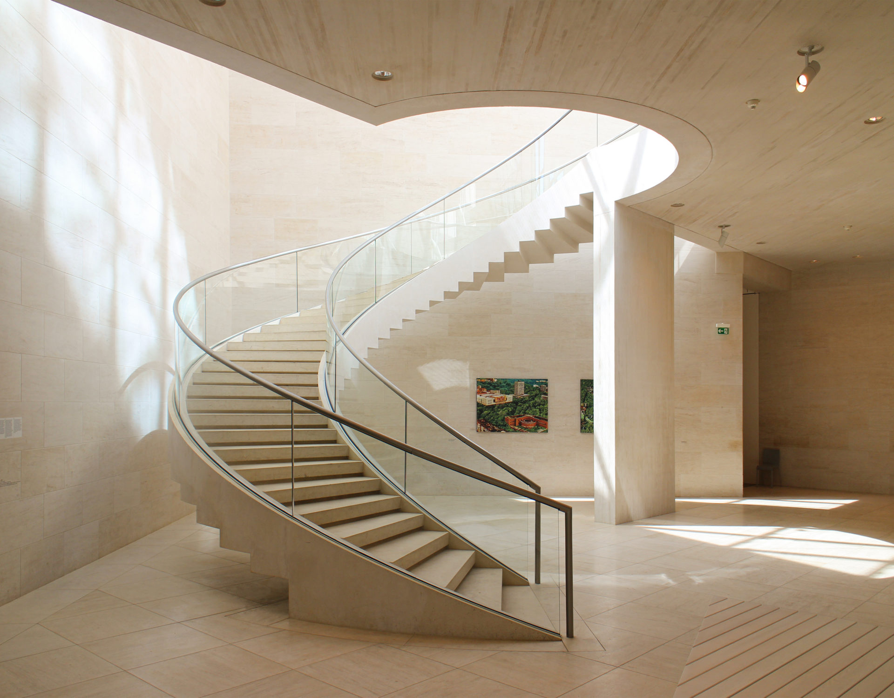
Gözlem: Yarım daire merdiven alt fuayeden 0'a yükseliyor; döşeme boşluğu, ince destek ve duvar eseri var.
Karar: −1→0 bağlantısı; +1 merdiveni değil.
Karşılaştırma: 050, 052, 055, 115 · Kat/alan: -1
Kamera pozu ve metrik ölçüler doğrulanmadı.
Kaynak052 · Alt kat / yarım daire merdivenin alt yüzeyi
Gözlem: Merdiven kolunun basamaklı alt yüzeyi, üst cam üçgen ve taş duvar birlikte görülüyor.
Karar: Alt fuayeden iniş merdiveninin altı; merdiven kalınlığı perspektifle ölçülemez.
Karşılaştırma: 051, 053, 115 · Kat/alan: -1
Kamera pozu ve metrik ölçüler doğrulanmadı.
Kaynak053 · Alt kat / yarım daire merdivenin alt yüzeyi
Gözlem: İnce düşey destek ön planda; geride aynı merdivenin tırtıklı alt yüzeyi var.
Karar: 0→−1 sistemiyle eşleşiyor; tam kamera noktası belirsiz.
Karşılaştırma: 051, 052 · Kat/alan: -1
Kamera pozu ve metrik ölçüler doğrulanmadı.
Kaynak054 · İniş merdiveninden Grand Hall ve karşıdaki çıkışa bakış
Gözlem: Önde alt fuaye boşluğu, karşıda 0 döşemesi ve insanlar; geniş çıkış merdiveni geride solda.
Karar: Kamera ara basamakta olabilir; sabit −1 kamera kotu kaldırıldı.
Karşılaştırma: 026, 050, 051 · Kat/alan: ara
Kamera pozu ve metrik ölçüler doğrulanmadı.
Kaynak055 · Alt fuaye / iniş boşluğunun altından çatıya
Gözlem: Kavisli döşeme boşluğunun altı, üstte korkuluk, üçgen cam ve altta 050/051'deki duvar eseri var.
Karar: Önceki 0→+1 merdiven ataması yanlış; −1'den iniş boşluğuna yukarı bakış.
Karşılaştırma: 050, 051, 054, 115 · Kat/alan: -1
Kamera pozu ve metrik ölçüler doğrulanmadı.
Kaynak056 · Zemin galeri eşiği / doğu kanadı adayı
Gözlem: Taştan ahşap zemine geçilen sergi eşiği; uzak derin nişli pencerede hendek duvarı var.
Karar: Zemin galeri ailesi olası; doğu kanadı ve tam eşik bağımsız doğrulanmadı, yön kaldırıldı.
Karşılaştırma: 057, 061, 062, 102 · Kat/alan: 0
Kamera pozu ve metrik ölçüler doğrulanmadı.
Kaynak057 · Galeri / kat ve kanat çözülemedi
Gözlem: Ahşap döşeme, kare kesitli düşey elemanlar ve sergi panoları var.
Karar: Geçici panolardan kalıcı duvar planı çıkarılamaz; belirli oda/kamera ataması kaldırıldı.
Karşılaştırma: 056, 058 · Kat/alan: belirsiz
Kamera pozu ve metrik ölçüler doğrulanmadı.
Kaynak058 · Galeri / kat ve kanat çözülemedi
Gözlem: Ahşap galeri döşemesi, sergi kolajları, oturma elemanı ve ray aydınlatma görülüyor.
Karar: Dış referans yok; seri sırası tek başına katı ve doğu kanadını kanıtlamıyor.
Karşılaştırma: 057, 060 · Kat/alan: belirsiz
Kamera pozu ve metrik ölçüler doğrulanmadı.
Kaynak059 · Taş duvar birleşimi
Gözlem: Taş duvar-tavan boyunca ince düşey metal/derz birleşimi görülüyor.
Karar: Detay ailesi kullanılabilir; hangi duvar, derz işlevi ve kat belirsiz.
Karşılaştırma: 017 · Kat/alan: belirsiz
Kamera pozu ve metrik ölçüler doğrulanmadı.
Kaynak060 · Galeri / kat ve kanat çözülemedi
Gözlem: Düz tavan içindeki dar teknik/aydınlatma hattı ve sergi bölmesi üstü görülüyor.
Karar: Galeri tavanı; kat ve kanat için yeterli ayırt edici kanıt yok.
Karşılaştırma: 057, 058 · Kat/alan: belirsiz
Kamera pozu ve metrik ölçüler doğrulanmadı.
Kaynak061 · Girişe yakın nişli galeri pencereleri / aday alan
Gözlem: Ahşap zeminli galerinin derin taş nişli penceresi; karşıda tarihi duvar ve meydan ağaçları var.
Karar: Pencere ailesi güçlü; önceki tam pencere ve azimut çözümsüz, aday bölgeye indirildi.
Karşılaştırma: 062, 063, 003 · Kat/alan: 0
Kamera pozu ve metrik ölçüler doğrulanmadı.
Kaynak062 · Girişe yakın nişli galeri pencereleri / aday alan
Gözlem: İki derin pencere nişi, hendek ve giriş köprüsüne yakın dış çevre birlikte görülüyor.
Karar: Pencerelerin girişe yakın cepheyle ilişkisi yeniden değerlendirildi; eski yön kaldırıldı.
Karşılaştırma: 061, 063, 004 · Kat/alan: 0
Kamera pozu ve metrik ölçüler doğrulanmadı.
Kaynak063 · Girişe yakın nişli galeri pencereleri / aday alan
Gözlem: Taş pencere nişinden giriş köprüsü, hendek ve 011'deki yüksek yapılar görülüyor.
Karar: Önceki yan cephe konumu güvenilir değil; girişe yakın niş ailesi, kesin pencere bilinmiyor.
Karşılaştırma: 011, 062, 102 · Kat/alan: 0
Kamera pozu ve metrik ölçüler doğrulanmadı.
Kaynak064 · Grand Hall / pavyona bakan cam çevresi adayı
Gözlem: Düşey cam doğrama, iç korkuluk, bir üçgen lamel yüzey ve dışta pavyon parçası görülüyor.
Karar: Spiral merdiven yanına atama desteklenmiyor; Grand Hall cam çevresi adayı, yön yok.
Karşılaştırma: 027, 030, 049 · Kat/alan: 0
Kamera pozu ve metrik ölçüler doğrulanmadı.
Kaynak065 · Cam geçitten tarihi duvarlara bakış
Gözlem: Taş galeri duvarı solda, tarihi duvarlar ve meydan yapıları dışarıda görülüyor.
Karar: Cam bağlantı çevresinden dış bakış olası; kesin kamera uzaklığı çözülmedi.
Karşılaştırma: 002, 003, 067 · Kat/alan: 0
Kamera pozu ve metrik ölçüler doğrulanmadı.
Kaynak066 · Batı cam merdiven hacmi / 097 ile aday eşleşme
Gözlem: Taş duvara bitişik uzun düz merdiven kolu; diğer yan ve tavan cam, duvarda Galeries yazısı var.
Karar: Düz pavyon köprüsü değil; 097'deki batı cam merdiven hacmiyle aday eşleşme, uç kotlar belirsiz.
Karşılaştırma: 067, 097, 102, 103 · Kat/alan: ara
Kamera pozu ve metrik ölçüler doğrulanmadı.
Kaynak067 · Cam bağlantıdan pavyona doğru bakış
Gözlem: Düz taş zeminli cam koridorun sonunda pavyonun çokgen cam feneri görülüyor.
Karar: Eski ana binaya bakış ters; bakış pavyona doğru düzeltildi.
Karşılaştırma: 068, 089, 102 · Kat/alan: 0
Kamera pozu ve metrik ölçüler doğrulanmadı.
Kaynak068 · Cam geçit çatı birleşimi
Gözlem: Cam bağlantının yatay çatı ızgarası ve onun ötesinde pavyon feneri görülüyor.
Karar: Pavyon bağlantısı çatı detayı; azimut ve kamera noktası kesin değil.
Karşılaştırma: 067, 089 · Kat/alan: 0
Kamera pozu ve metrik ölçüler doğrulanmadı.
Kaynak069 · Ahşap çift kanat kapı / oda ve kat belirsiz
Gözlem: Taş duvarda yüksek ahşap kapı kenarı, siyah menfez ve üçgen döşeme derzleri var.
Karar: Oditoryum kapısı olduğu kanıtlanmıyor; yalnız dosya sırasına dayanan −1 ataması kaldırıldı.
Karşılaştırma: 070, 071 · Kat/alan: belirsiz
Kamera pozu ve metrik ölçüler doğrulanmadı.
Kaynak070 · Ahşap çift kanat kapı / oda ve kat belirsiz
Gözlem: Taş söve içinde çift kanat ahşap kapı; çevrede holün yalnız küçük bir kısmı var.
Karar: Kapı ailesi okunuyor; oditoryum/kat kimliği kesin değil, harita noktası kaldırıldı.
Karşılaştırma: 069, 071 · Kat/alan: belirsiz
Kamera pozu ve metrik ölçüler doğrulanmadı.
Kaynak071 · Oditoryum arka sıralar
Gözlem: Koltuk sıraları sahne/perdeye bakıyor; ahşap duvar ve kaset tavan birlikte görülüyor.
Karar: Oditoryum kimliği ve −1 plan ilişkisi güçlü; sıra sayısı ve kamera mesafesi ölçülmedi.
Karşılaştırma: 073, 074, 104 · Kat/alan: -1
Kamera pozu ve metrik ölçüler doğrulanmadı.
Kaynak072 · Oditoryum yan duvarı
Gözlem: Delikli kare ızgaralı ahşap panel ve önünde koltuk sırtı var.
Karar: Oditoryum panel ailesi; hangi duvar modülü olduğu kesin değil.
Karşılaştırma: 071, 073, 076 · Kat/alan: -1
Kamera pozu ve metrik ölçüler doğrulanmadı.
Kaynak073 · Oditoryum arka sıralar
Gözlem: Perde solda, sahne ve yan çıkış sağda; 071'in karşı çapraz görünüşü.
Karar: Oditoryum ilişkisi tutarlı; fotoğraf kamerası hâlâ hipotez.
Karşılaştırma: 071, 074, 104 · Kat/alan: -1
Kamera pozu ve metrik ölçüler doğrulanmadı.
Kaynak074 · Oditoryum tavanı
Gözlem: Kaset tavanın eğimli iç yüzleri, menfez ve alt kenarda perde/çıkış görülüyor.
Karar: Salon tavanı eşleşiyor; kaset yüksekliği ve boyutu ölçülmedi.
Karşılaştırma: 071, 073, 075 · Kat/alan: -1
Kamera pozu ve metrik ölçüler doğrulanmadı.
Kaynak075 · Oditoryum tavanı
Gözlem: Dört kasetin birleşimi ve içlerindeki kare menfezler tam yukarıdan kadraja giriyor.
Karar: Oditoryum tavan modülü; plan azimutu ve tekil modül bilinmiyor.
Karşılaştırma: 074 · Kat/alan: -1
Kamera pozu ve metrik ölçüler doğrulanmadı.
Kaynak076 · Oditoryum duvar detayı
Gözlem: Düz ve delikli ahşap paneller, gömme spotlar ve sahne/oturma kenarı görülüyor.
Karar: Oditoryum kaplama detayı; tüm duvarlar aynı panelle kaplı varsayılmamalı.
Karşılaştırma: 071, 072, 073 · Kat/alan: -1
Kamera pozu ve metrik ölçüler doğrulanmadı.
Kaynak077 · Asansör ön holü
Gözlem: Taş nişte metal asansör kapısı, çağrı elemanları ve levha görülüyor.
Karar: Asansör ailesi belli; birden çok katta tekrarlandığından kat ataması yapılamaz.
Karşılaştırma: 017, 078, 102, 103, 104 · Kat/alan: belirsiz
Kamera pozu ve metrik ölçüler doğrulanmadı.
Kaynak078 · Asansör kabini
Gözlem: Metal kabin içinde kontrol paneli, tutamak ve birleşim derzleri görülüyor.
Karar: Kabin detayı kullanılabilir; görüntü katı veya dış yönü kanıtlamıyor.
Karşılaştırma: 077 · Kat/alan: belirsiz
Kamera pozu ve metrik ölçüler doğrulanmadı.
Kaynak079 · Taş duvardaki teknik ızgara / işlev belirsiz
Gözlem: Taş duvara gömülü ince siyah çizgili teknik ızgara var.
Karar: Önceki radyatör adı fazla kesin; teknik ızgara olarak düzeltildi, işlev belirsiz.
Karşılaştırma: 017, 059 · Kat/alan: belirsiz
Kamera pozu ve metrik ölçüler doğrulanmadı.
Kaynak080 · Tuvalet / servis
Gözlem: Taş duvar üzerinde dairesel WC piktogramı görülüyor.
Karar: İşaret ailesi; belirli WC veya kat tekilleşmiyor.
Karşılaştırma: 081, 102 · Kat/alan: belirsiz
Kamera pozu ve metrik ölçüler doğrulanmadı.
Kaynak081 · Tuvalet / servis
Gözlem: Koyu taş yüzeyli lavabo hacmi, ayna, duvara asılı lavabolar ve kapılar var.
Karar: WC malzeme/armatür referansı; hangi oda/kat olduğu bilinmiyor.
Karşılaştırma: 080 · Kat/alan: belirsiz
Kamera pozu ve metrik ölçüler doğrulanmadı.
Kaynak086 · Fort Thüngen yakınında dış yaklaşım
Gözlem: Fort'un yuvarlak kulesi ve tarihi duvar önünde; Mudam cam çatısı geride.
Karar: Fort tarafından bakış tutarlı; yerel kamera metriği çözülmedi.
Karşılaştırma: 087, 092, 108 · Kat/alan: dis
Kamera pozu ve metrik ölçüler doğrulanmadı.
Kaynak087 · Fort tarafındaki köprü / arka yaklaşım

Gözlem: Merkezi cam fener ve iki yan cam salon, öndeki Fort bağlantısı ekseninden görülüyor.
Karar: Ana giriş kapısı değil; Fort yönündeki yaklaşım/çatı aksı.
Karşılaştırma: 092, 095, 119 · Kat/alan: dis
Kamera pozu ve metrik ölçüler doğrulanmadı.
Kaynak088 · Doğu cephe / hendek
Gözlem: Pavyon solda, düz bağlantı ortada, nişli galeri ve hendek sağda.
Karar: Doğu/pavyon dış görünüş ailesi; boyutlar perspektifle doğrudan okunamaz.
Karşılaştırma: 002, 003, 102 · Kat/alan: dis
Kamera pozu ve metrik ölçüler doğrulanmadı.
Kaynak089 · Pavyon dış görünüşü
Gözlem: Çokgen pavyon feneri ve taş kaide yakın görünüşte; ana çatıdan küçük ölçekli ayrı hacim.
Karar: Pavyon kimliği net; dar kadrajda kamera mesafesi belirsiz, yön kaldırıldı.
Karşılaştırma: 002, 067, 088 · Kat/alan: dis
Kamera pozu ve metrik ölçüler doğrulanmadı.
Kaynak090 · Düz eğik cam örtü ve geride pavyon feneri
Gözlem: Düz eğik cam çatı önde; daha küçük pavyon feneri sağ geride görülüyor.
Karar: Eski merkez kule ve güneybatı yorumu güvenilir değil; kamera ataması kaldırıldı.
Karşılaştırma: 034, 088, 089 · Kat/alan: dis
Kamera pozu ve metrik ölçüler doğrulanmadı.
Kaynak091 · Taş parapet üstünde cam fener / cephe belirsiz
Gözlem: Taş parapet üstünden cam fenerin üst kısmı görülüyor; giriş kapısı kadrajda yok.
Karar: Kesin giriş cephesi ataması kanıtlanmıyor; dar kadraj nedeniyle konum kaldırıldı.
Karşılaştırma: 089, 100 · Kat/alan: dis
Kamera pozu ve metrik ölçüler doğrulanmadı.
Kaynak092 · Fort tarafında cam cephe
Gözlem: Fort duvarı önünde merkezi cam piramit, yan örtü ve yüksek bina birlikte görülüyor.
Karar: Fort tarafı kimliği tutarlı; metrik kamera hâlâ hipotez.
Karşılaştırma: 086, 087, 119 · Kat/alan: dis
Kamera pozu ve metrik ölçüler doğrulanmadı.
Kaynak093 · Batı eğrisel cam salon dışı
Gözlem: Eğrisel cam salon ana cam piramitle birleşiyor; yüzey ızgarası değişiyor.
Karar: Batı/Mudam Café eğrisel çatı ailesi; panel sayısı bağımsız sayılmalı.
Karşılaştırma: 087, 119, 102 · Kat/alan: dis
Kamera pozu ve metrik ölçüler doğrulanmadı.
Kaynak094 · Taş cephe ve düşey cam yarık / kanat belirsiz
Gözlem: Kör taş hacim, düşey cam yarık ve altta tarihi duvar var; tekil cephe eşleşmesi yok.
Karar: Batı galeri etiketi fazla kesin; cephe ve kamera konumu çözülemedi.
Karşılaştırma: 099, 102 · Kat/alan: dis
Kamera pozu ve metrik ölçüler doğrulanmadı.
Kaynak095 · Fort yönünden üst yapı
Gözlem: Önde Fort bağlantısının parapeti, geride merkez cam fener ve düz eğik yan örtü var.
Karar: Fort yönlü örtü ilişkisi tutarlı; tek fotoğraftan yükseklik çıkarılmamalı.
Karşılaştırma: 087, 092 · Kat/alan: dis
Kamera pozu ve metrik ölçüler doğrulanmadı.
Kaynak097 · Batı cam merdiven hacmi / dış görünüş adayı
Gözlem: Taş cephe dışına taşan kırıklı cam hacmin alt/üst çizgileri basamak kollarıyla eğiliyor.
Karar: Düz doğu bağlantısı yorumu yanlış; batı cam merdiven adayı, kamera konumu kaldırıldı.
Karşılaştırma: 066, 102, 103 · Kat/alan: dis
Kamera pozu ve metrik ölçüler doğrulanmadı.
Kaynak098 · Cam çatı çevresindeki dış duvarlar
Gözlem: Merkez cam piramidin önünde farklı yükseklikte taş alınlar görülüyor.
Karar: Çatı-duvar ilişkisi kullanılabilir; kesin kamera ve taş yüzey sırası çözülmedi.
Karşılaştırma: 087, 092 · Kat/alan: dis
Kamera pozu ve metrik ölçüler doğrulanmadı.
Kaynak099 · Pavyon cam geçidine dışarıdan bakış
Gözlem: Düz cam pavyon bağlantısı taş hacimler arasından geçiyor; merkez çatı geride.
Karar: Pavyon bağlantısı tutarlı; 097'deki eğimli cam merdivenden ayrı tutulmalı.
Karşılaştırma: 067, 068, 088 · Kat/alan: dis
Kamera pozu ve metrik ölçüler doğrulanmadı.
Kaynak100 · Doğu galeri uzun cephesi
Gözlem: Nişli galeri taş cephesi ve arkasında cam fener görülüyor.
Karar: Cephe ailesi tutarlı; dar kadraj kesin çekim noktasını çözmez.
Karşılaştırma: 003, 004, 088 · Kat/alan: dis
Kamera pozu ve metrik ölçüler doğrulanmadı.
Kaynak108 · Fort ve Mudam uzak görünüşü / çekim noktası belirsiz
Gözlem: Fort'un üç kulesi, Mudam ve arka yüksek yapılar uzak bir noktadan birlikte görülüyor.
Karar: Uzak görüş noktası bilinmiyor; eski keyfî harita mesafesi kaldırıldı. Havadan çekim olduğu da kanıtlı değil.
Karşılaştırma: 086, 092, 119 · Kat/alan: dis
Kamera pozu ve metrik ölçüler doğrulanmadı.
Kaynak109 · Pavyon ve nişli galeri / ağaçlar arkasından
Gözlem: Yaprakların arkasında pavyon solda, cam bağlantı ortada, nişli galeri sağda görülüyor.
Karar: Giriş cephesi yorumu yanlış; pavyon tarafı. Eski kamera/yön kaldırıldı.
Karşılaştırma: 002, 088, 116 · Kat/alan: dis
Kamera pozu ve metrik ölçüler doğrulanmadı.
Kaynak110 · Grand Hall taş duvar ve çatı
Gözlem: Geniş merdiven tarafındaki taş üst yüzey, ana cam çatı köşesi ve gölgeler yakın planda.
Karar: Hol kimliği tutarlı; dar kadraj nedeniyle kesin kamera yönü kaldırıldı.
Karşılaştırma: 021, 026, 031 · Kat/alan: 0
Kamera pozu ve metrik ölçüler doğrulanmadı.
Kaynak114 · Grand Hall / aşağı iniş üzerindeki üçgen cam
Gözlem: Üçgen lamelli camın altında aşağı iniş boşluğu korkuluğu karşıdan görülüyor.
Karar: Önceki merkez aks hedefi yerine iniş boşluğu tarafı; metrik yön henüz çözülmedi.
Karşılaştırma: 045, 049, 102 · Kat/alan: 0
Kamera pozu ve metrik ölçüler doğrulanmadı.
Kaynak115 · Alt kat / yarım daire merdiven
Gözlem: Alt fuayeden kavisli merdiven, eğrisel döşeme boşluğu ve ince düşey destek görülüyor.
Karar: 0→−1 merdiveninin alt görünüşü; +1 merdiveni değil.
Karşılaştırma: 051, 052, 055, 104 · Kat/alan: -1
Kamera pozu ve metrik ölçüler doğrulanmadı.
Kaynak116 · Yüksekten giriş, pavyon ve çatı görünüşü

Gözlem: Yukarıdan giriş portali, pavyon, çatı ışıklıkları ve meydan görülüyor.
Karar: Havadan/yüksekten görünüş; kamera XY/Z/lens çözülmedi, zemindeki nokta kaldırıldı.
Karşılaştırma: 009, 088, 102 · Kat/alan: dis
Kamera pozu ve metrik ölçüler doğrulanmadı.
Kaynak119 · Fort aksından cam üst yapı
Gözlem: Merkez fener, solda kavisli örtü ve sağda düz eğik örtü karşıdan görülüyor.
Karar: Fort yönlü görünüş ailesi; kırpılmış fotoğrafın kamera mesafesi belirsiz.
Karşılaştırma: 087, 093, 102 · Kat/alan: dis
Kamera pozu ve metrik ölçüler doğrulanmadı.
Kaynak122 · Parc Dräi Eechelen / peyzaj yolu
Gözlem: Eğimli çim yüzeyde iki izli taş yol ve yoğun ağaçlık var; bina görünmüyor.
Karar: Peyzaj karakteri referansı; belirli patika/harita konumu doğrulanamadı.
Karşılaştırma: 082, 096 · Kat/alan: belirsiz
Kamera pozu ve metrik ölçüler doğrulanmadı.
Kaynak123 · Parc Dräi Eechelen / tarihi duvar
Gözlem: Tarihi taş istinat köşesi, toprak yol ve sonbahar ağaçları görülüyor.
Karar: Duvar malzemesi ve kot ilişkisi; tekil duvar konumu bilinmiyor.
Karşılaştırma: 082, 096 · Kat/alan: belirsiz
Kamera pozu ve metrik ölçüler doğrulanmadı.
Kaynak124 · Meydan / köprü / tarihi duvar panoraması
Gözlem: Meydan ağaçları, giriş köprüsü kenarı, tarihi duvar ve yüksek yapılar panoramik kadrajda.
Karar: Meydan çevresi referansı; panorama/uzaklık nedeniyle kesin kamera noktası yok.
Karşılaştırma: 011, 063, 108 · Kat/alan: dis
Kamera pozu ve metrik ölçüler doğrulanmadı.
Kaynak